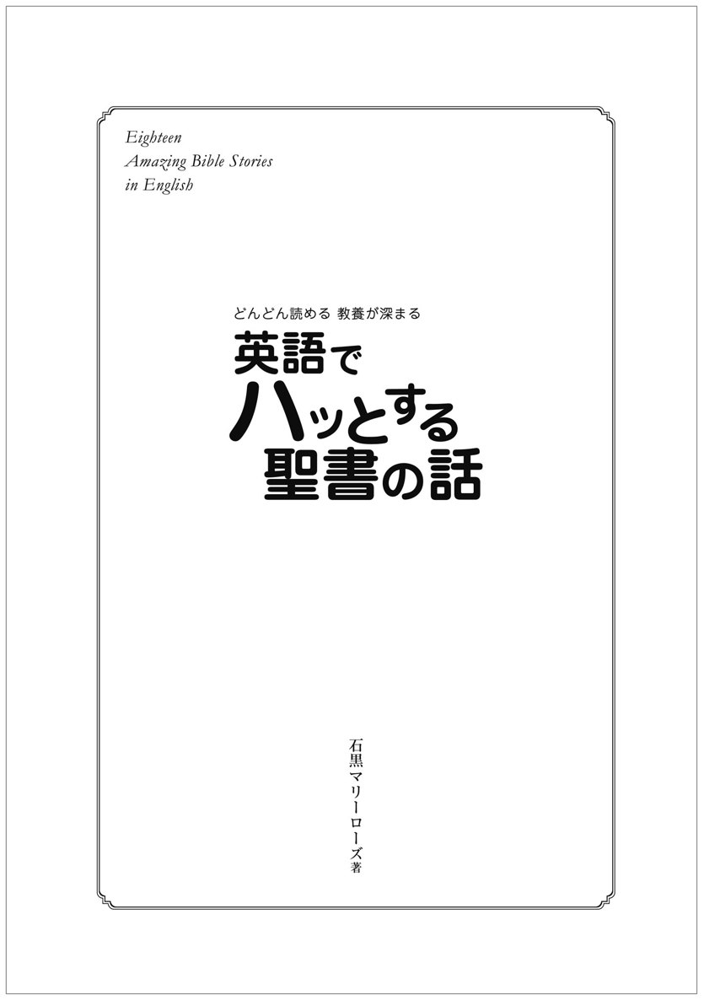
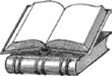
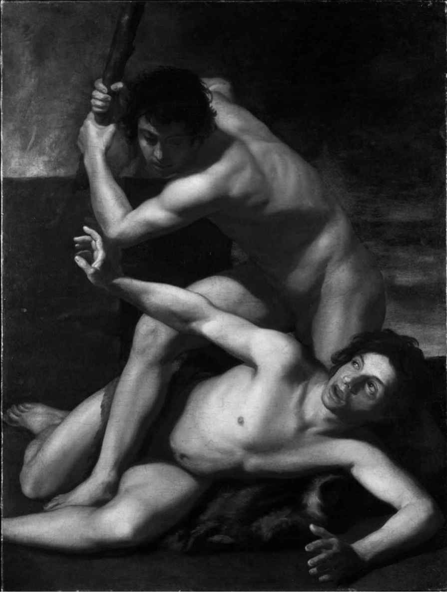
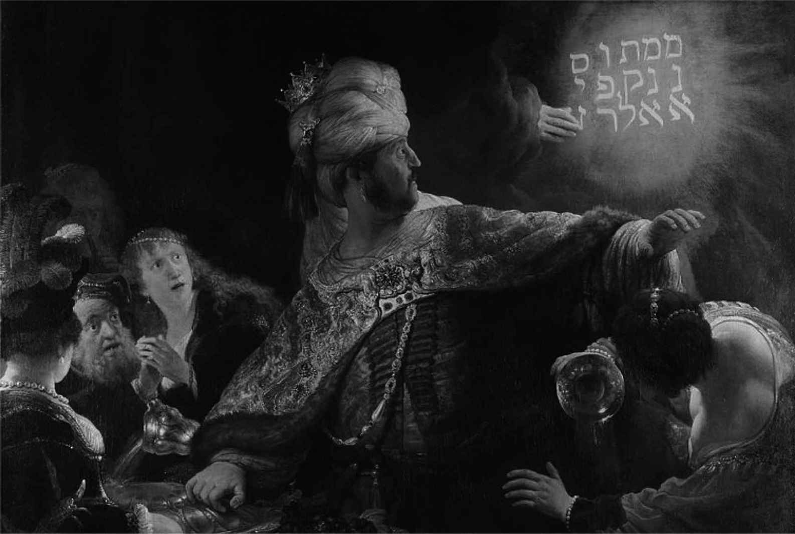

| [音声DL付]英語でハッとする聖書の話 ちょっといい話シリーズ | |
| 石黒 マリーローズ | |
| (2015) | |

※参照項目から元の箇所に戻るには、お使いのビューワーの仕様に従ってください。または一旦目次を表示し、戻りたい箇所の近くの見出しをタップして戻ってください。
Foreword
はじめに

世界のベストセラーといわれる「聖書」に関心を持つ方は多くいらっしゃることでしょう。聖書はこれまで世界中の人の生き方や文化に計り知れないほど大きな影響を与えてきた書物です。
キリスト教文化圏の言葉である英語もまた、聖書の影響を深く受けてきました。そのため、英語を学ぶ上で、聖書について知ることは必要不可欠と言っても過言ではありません。実際、英語表現の中には、聖書の話にちなんだものが数多くあり、日常会話やメディアでも頻繁に使われます。また、アメリカの大統領は演説でよく聖書を引用することがあります。そのとき、引用の背景にある聖書の話を知っていれば、その演説の内容を英語でより深く味わうことができるでしょう。このように、聖書の教養を身に付けることは、英語と英語圏の文化を理解するカギでもあるのです。
本書は、やさしい英語でストーリーを楽しめる「ちょっといい話」シリーズの姉妹編で、聖書の中でも特に有名な物語18編を紹介しています。執筆は、キリスト教英語の専門家である石黒マリーローズ先生です。聖書の話を、優しく語り掛けるような、分かりやすい英語でリライトしてくださいました。初中級4000語レベル * の語彙をベースにし（宗教用語は除く）、少し難しめの単語や固有名詞には語注を付けています。また、物語から派生した英語表現をWords from the Bible（聖書の表現）として紹介しています。ぜひ覚えて英語の理解に役立ててください。
無料ダウンロード音声には、物語の全英文が収録されていますので、目からも耳からも物語を味わうことができます。さらに、ダウンロード特典として、Words from the Bibleの音声と、本書未収録の物語1編を用意しています。
麗しい話あり、残酷な話あり、教えられる話あり、の聖書物語。色々な意味で「ハッと」させられることでしょう。本書を通して、一人でも多くの方に聖書と英語の面白さを味わっていただければ幸いです。
* アルクの「標準語彙水準SVL12000」（Standard Vocabulary List 12000）に基づく。
アルク英語出版編集部
Contents
目 次
音声ファイルのダウンロードと再生方法、無料特典ダウンロードについて
Abraham : An Obedient Man：アブラハム：従順な人
Moses and the Exodus：モーセと出エジプト
The Death of John the Baptist：洗礼者ヨハネの死
Throwing the First Stone：最初の石を投げる
The Betrayal of Jesus：イエスへの裏切り
ダウンロード特典でお話をもう1編読むことができます（詳細はこちら）。
【参考書籍】
本書では以下の書籍を参考にさせていただきました。
・The Living Bible
・Good News Translation(=Good News Bible)
・The Jerusalem Bible
・『新共同訳聖書』（日本聖書協会）
・『聖書 スタディ版 改訂版』（日本聖書協会）
How to use this book
本書の構成と使い方
本書は聖書の中の特に有名なお話18編を収録しています。
まずは予備知識となる「お話を読む前に」を読んでから、本文を読むことをお勧めします。なお、お話は「旧約聖書」「新約聖書」の順に掲載していますので、この通りに読むようにしましょう。
無料ダウンロード音声トラック番号
それぞれのストーリーの英語音声が無料でダウンロードできます。
ストーリーのタイトル
聖書の箇所
そのストーリーが含まれる聖書の箇所です。
リード文
ストーリーの概要を押さえましょう。
英文
ストーリーの語数
一話当たりの単語数です。リーディング教材として利用する際の参考にしてください。
ストーリーを主題とする絵画
聖書の表現
それぞれのストーリーに由来する英語表現を紹介しています。なお、この部分の音声はダウンロード特典でお聞きいただけます（こちら参照）。
日本語訳
英文が難しく感じられたら、日本語訳を参照してみましょう。
語注
お話の英文は、アルクの「標準語彙水準SVL12000」 * の初中級4000語レベルの語彙をベースに書かれています。また、固有名詞や難しいと思われる単語には語注を付け、スムーズに読み進められるよう構成しています。
* 「標準語彙水準SVL12000」とは、日本人の英語学習者にとって有用な英単語1万2000語を選び出し、12のレベルに区分した語彙リストです。
聖書をもう少し詳しく知ることができるよう、「旧約聖書」と「新約聖書」の最後には、「もうちょっと深い 旧約聖書の話」「もうちょっと深い 新約聖書の話」のページがあります。お話の後にぜひ目を通してください。
無料ダウンロード音声を参考に音読、リピーティング、シャドーイングに活用したり、音声のみでリスニング用教材として利用したりすることができます。
お話を読む前に
世界最大のベストセラー、聖書とは
聖書は、旧約聖書（以下「旧約」）39巻、新約聖書（以下「新約」）27巻、計66巻もの書物から成るキリスト教の経典です。歴史書、預言の書、詩、文学など、聖書に含まれる書物は実に多彩で、聖書が多くの芸術に影響を与え、またいつの時代も世界中の人々を魅了してきた理由がここにあります。「旧約」「新約」の「約」は、神様と人との「契約」（testament）を表しています。旧約（旧い契約）とは、神からイスラエル民族（古代イスラエル人）に与えられたおきて（「律法」）のことで、新約（新しい契約）とは、イエス・キリストの死と復活を信じるすべての人間は救われる、という救いの約束のことです。
本書で取り上げた書物と主な登場人物
ここで、本書で取り上げたお話が含まれている書物の概要と、主な登場人物を紹介します。
The Old Testament （旧約聖書）
Genesis（創世記）
旧約聖書の最初の巻で、前半には、天地創造の物語、カインとアベル、ノアの箱舟、バベルの塔など、世界と人類のはじめに起こったさまざまな出来事が描かれている。後半は、イスラエル民族の祖先となった親子3世代、アブラハム、イサク、ヤコブの話。
Exodus（出エジプト記）
偉大な預言者モーセの話。モーセが、奴隷にされていたイスラエル民族を率いてエジプトから脱出（出エジプト）し、過酷な荒野の旅を経験しながら、神から示された「約束の地」を目指す。
The First Book of Samuel（サムエル記上）
イスラエル民族の指導者サムエルが任命した、イスラエル初代の王サウル、そして2代目の王ダビデの物語。ダビデはイスラエル史上最も偉大な王とされる。
The First Book of Kings（列王記上）
ダビデの後継者ソロモンの時代の話。ソロモンは知恵と洞察の深さ、また富と名声で知られる。
The Book of Daniel（ダニエル書）
預言者ダニエルについての物語。バビロニアの捕虜となったダニエルが、夢を読み解く特別な能力で数々の困難と危機を乗り越え、活躍する。
The New Testament （新約聖書）
The Gospel according to Matthew（マタイによる福音書）
The Gospel according to Mark（マルコによる福音書）
The Gospel according to Luke（ルカによる福音書）
The Gospel according to John（ヨハネによる福音書）
新約聖書の最初には、これら4つの福音書（4福音書）*1 がくる。gospel（福音、良い知らせ）とはイエス・キリストによる救いを意味する。イエスの弟子の中の4人が、イエスの生涯とその教えについてそれぞれの視点で書き記しており、弟子の名前が福音書名になっている。このうち、マタイとヨハネは12弟子*2 のメンバーだった。
音声ファイルのダウンロードと再生方法、
ダウンロード特典について
※PC専用のサイトです。まずはこちらにアクセス！
アルク ダウンロードセンター
http://www.alc.co.jp/dl/
(2015年10月時点の情報。今後詳細が変更になる可能性があります）
「アルク ダウンロードセンター」にアクセス、電子書籍版『英語でハッとする聖書の話』をクリック。
お申し込みフォームに必要事項をご記入の上送信していただくと、ご登録いただいたメールアドレスに「ダウンロードページURL」の案内が届きます。
メールの本文に記載されているURLにアクセスして、圧縮ファイルをダウンロードしてください。
◆ ダウンロード音声ファイルについて
PCにダウンロードした圧縮ファイルを解凍ソフトで展開の上、iTunesなどの音声再生ソフトで取り込んでご利用ください。音声再生ソフトでのファイルの取り込み方法や携帯音楽プレーヤーでの利用方法については、ソフトやプレーヤーに付属するマニュアルでご確認ください。
音声ファイルは、音声再生ソフトで次のように表示されます。
出版社名（アーティスト名）：「ALC PRESS INC.」と表示
書名（アルバム名）：『英語でハッとする聖書の話』
ダウンロードした音声はトラック番号が表示されます。
本書では、ダウンロードした音声を使用する部分はDL01_Adam and Eve のように、ダウンロードした音声のトラック番号に対応しています。該当のトラックを再生して学習してください。
◆ ダウンロード特典について
本書ご購入の方限定のダウンロード特典をご用意いたしました。
ぜひ学習にご活用ください。
「聖書の表現」ダウンロード音声
本書掲載の「聖書の表現」の英文音声です。無料ダウンロード音声と併せてお楽しみください。
なお、本書では、本文中のダウンロード音声ファイルについて、次のように表示しています。
トラック01の場合なら、DLMP3_01と表示されています。
本書未収録の物語1編 ダウンロードテキスト＆音声
英文テキスト＋日本語訳（PDF形式）と英文音声（MP3形式）をダウンロードできます。「旧約聖書のお話」をもう１編楽しめます。
◯Joseph and His Jealous Brothers（ヨセフと嫉妬深い兄弟たち）
Joseph and His Jealous Brothers_text.pdf（テキスト・絵画付き）
DLMP3_19_1（本文）
DLMP3_19_2（聖書の表現）
12人兄弟の中で父親から一番かわいがられていたヨセフは、兄たちから嫉妬され、外国に売り飛ばされてしまいます...。
ミュージカル作品にもなった、「ヨセフ物語」のオリジナル・ストーリーをお楽しみください。
DL01_Adam and Eve
Adam and Eve
アダムとエバ
Genesis（創世記）2章、3章
人類最初の男女アダムとエバ。二人は、心配事の一切ない楽園──「エデンの園」で自由な生活を送っていました。しかしある日、エバの前に蛇が現れ、甘い言葉をささやき始めます。誘惑に負けたエバは「禁断の木の実」に手を伸ばし、そしてアダムも...。
Many of you will have heard of*1 the Garden of Eden, known also as*2 Paradise. In the Bible, it is described as a peaceful and beautiful place and also the garden where the first man and woman,*3 Adam and Eve, began their lives.
Now, in the middle of this garden, there grew an unusual tree called*4 the tree of knowledge.
God told Adam that he could eat the fruit of any tree in the garden except for the fruit from that tree. If he did, he would die the same day,*5 He said.
Then, one day, a snake appeared. The snake began to speak to Eve. "Did God tell you that you could eat the fruit from all the trees?" it asked. "Well, He told us we could eat from any tree except for the tree of knowledge," Eve answered. The snake then told her that eating from that tree would not kill them. Instead, the snake said, eating its fruit would make them wise like God ─ they would know the difference between good and bad.
Eve looked at the beautiful tree of knowledge and its*6 delicious-looking fruit. She thought about how wonderful it would be to become wise. Eve just could not resist the temptation and took some of the fruit and ate it. Then she offered some to Adam, and he ate it. In that instant, they became aware of their*7 nakedness and, feeling embarrassed, sewed*8 fig leaves together to cover themselves.
That evening, when they heard the voice of God, they hid from Him among the trees. God asked, "Where are you? And why are you hiding?" Adam admitted that he had eaten the*9 forbidden fruit from the tree of knowledge, but instead of saying, "I am sorry," he made an excuse. He said, "The woman you put here with me gave me the fruit, and I ate it." When Eve*10 explained herself, she, too, made an excuse. She said, "The snake*11 tricked me into eating it." Both of them blamed someone or something else.
God was very unhappy with the couple. He made clothes out of animal skins for them and told them to leave the Garden of Eden. Adam now had to work hard, farming and gardening to produce enough food for them to eat. Eve's penalty was the pain of*12 childbirth. Their happy lives were now a thing of the past -- all because they had*13 given in to temptation.
405 words
《アダムとエバ》ルーカス・クラナハ（父）
Words from the Bible
DLMP3_01
★the tree of knowledge：The tree in the story is also known as the "tree of knowledge of good and evil." After eating from it, Adam and Eve became aware of right and wrong. These days, the expression is related to acquiring knowledge and becoming aware of things perhaps others don't want you to know.
★the forbidden fruit：This is a very popular term in today's English. It describes someone or something that you find especially desirable because you are supposed to stay away from that person or thing. Another popular term related to this fruit is*14"Adam's apple." It is thought to*15 originate from the idea of "the forbidden fruit"*16 getting stuck in Adam's throat when he ate it. Although the Bible doesn't tell us what the fruit was, many paintings show red apples. This may be because the*17 Latin words for "apple" (malum) and "evil" (malus) are so similar.
楽園としても知られるエデンの園のことは、多くの人が耳にしたことがあるでしょう。聖書では、エデンの園は平和で美しく、最初の男女、アダムとエバが生活を始めた庭園として描かれています。
さて、この園の中央には知識の木と呼ばれる珍しい木がありました。
神はアダムに、園のどの木の果実を食べてもよいが、その木の実だけはいけない、と言いました。もし食べれば、その日のうちに死んでしまうだろう、と言うのです。
そしてある日、蛇が現れ、エバに話し掛け始めました。「園のすべての木から実を食べてよいと神は言ったのか」と蛇は尋ねました。「ええ、知識の木以外なら、どの木の実も食べていいと言われました」とエバは答えました。すると蛇はエバに、その木の実を食べても死ぬことはないと言いました。むしろ、その実を食べれば神のように賢くなる──善と悪の違いを知るようになる、と。
エバは美しい知識の木とおいしそうなその実を眺めました。賢くなるのはどんなに素晴らしいことだろうと考えました。エバはどうしてもその誘惑に打ち勝つことができず、その実を取って食べました。それからアダムにいくらかを渡し、アダムがそれを食べました。その瞬間、二人は裸であることに気が付き、恥ずかしくなって、イチジクの葉をつなぎあわせると体を覆いました。
その夜、神の声が聞こえると、二人は神から隠れて木々の間に潜みました。神は尋ねました。「どこにいるのか。なぜ隠れているのか」。アダムは、禁じられていた知識の木の実を食べてしまったことを認めました。しかし、「ごめんなさい」と謝る代わりに言い訳をしました。「あなたが私のそばにいるようにしてくださった女が実をくれたので、私はそれを食べました」。エバも、自分のことを説明する際、「蛇がだましたので、それを食べてしまいました」と言い訳をしました。二人とも他の人や他のもののせいにしたのです。
神は二人にとてもがっかりしました。神は二人に動物の皮の衣をつくってやると、エデンの園を去るようにと言い渡しました。アダムは今や一生懸命働いて、土を耕したり、植物を育てたりして自分たちが食べる物を生み出さなければならなくなりました。エバは罰として出産の痛みを味わうことになりました。二人の幸せな生活はもはや過去のものとなったのです──何もかもすべて、二人が誘惑に負けてしまったために。
聖書の表現
☆知識の木：この話に出てくる木は「善悪の知識の木」としても知られています。その実を食べた後、アダムとエバは善悪を自覚するようになりました。今日ではこの表現は、他の人が知ってほしくないと思っていることについて、知識を得たり気付いたりすることと関係しています。
☆禁断の果実：これは現代の英語で非常によく使われる言葉です。近付いてはならないとされるため、なおさら魅力的に思われる人やもののことを表しています。この果実に関連する言葉でよく知られているものに、"Adam's apple"（のどぼとけ）があります。アダムが「禁断の果実」を食べたとき、それが喉に詰まったという話に由来するといわれています。聖書にはこの果実が何であったか書かれてはいませんが、多くの絵画で赤いリンゴが描かれています。おそらく、ラテン語の「リンゴ」（malum）と「邪悪」（malus）がよく似ているからでしょう。
*1 the Garden of Eden：エデンの園
*2 Paradise：楽園、エデンの園。paradiseは「楽園、理想郷」。
*3 Adam and Eve：アダムとエバ。神は土からアダムを、アダムのあばら骨からエバを形づくった。エバはエヴァ、イブともいう。
*4 the tree of knowledge：知識の木。the tree of knowledge of good and evil（善悪の知識の木）ともいい、善と悪を判断する力を与えるとされている。
*5 He：God（神）を指す場合は、文中でもHe、Him、Hisとしている。
*6 delicious-looking：おいしそうな
*7 nakedness：裸
*8 fig leaf：イチジクの葉。この話から「いかがわしいものを覆い隠すもの」という意味も生まれた。
*9 forbidden：禁じられた
DL02_Cain and Abel
Cain and Abel
カインとアベル
Genesis（創世記）4章
楽園を追放されたアダムとエバに、カインとアベルという二人の兄弟が生まれました。ある日、アベルに嫉妬を覚えたカインは、感情をコントロールできず、人類初のある事件を起こしてしまいます...。
You may be surprised to find that the Bible has many stories of*1 high drama, including murder and other crimes. The story of Cain and Abel is one such drama. You may*2 come across variations of this*3 theme in popular*4 novels and films. We shall look at the original version, as told in the Bible.
When Adam and Eve were sent out of the Garden of Eden, they had to live as ordinary people. Soon afterward, Eve*5 became pregnant by Adam. She gave birth to a son and they named him Cain. Later, she*6 gave birth to another son, Abel. Cain became a farmer, and Abel became a shepherd.
When it came to harvest time, the two brothers made an*7 offering to God. Cain gave some of his harvest, while Abel brought*8 the first lamb born to one of his sheep and gave God the best parts of it.*9 God was pleased with Abel and his offering, but not with Cain and his. This made Cain jealous.
Seeing Cain's angry face, God said, "Why are you upset? You would be smiling if you had done the right thing. Because you have done evil,*10 sin is at your door.*11 You must not let it conquer you." This was God's warning to Cain that he must show some*12 self-discipline and*13 self-control.
However, Cain could not control his anger. Later, he took his brother into the fields, and, there, he attacked and killed him. Cain had been conquered by sin. Then God asked Cain, "Where is your brother, Abel?"
Cain knew very well where his murdered brother was, but he answered, "I don't know. Am I my brother's keeper?" Of course, Cain's question was not a real question ─ he did not expect or want an answer. What he actually meant was "I am not my brother's keeper ─ he is not a child that needs to be looked after."
But God knew where Abel was and what had happened to him. "Why have you done this terrible thing?" God asked Cain.*14"Your brother's blood is crying to me from the ground. You*15 are cursed to wander the world, as the soil that has*16 soaked up your brother's blood will now not produce anything for you."
Although Cain had not been sorry for killing Abel, he now*17 felt sorry for himself and complained to God : "This punishment is too hard for me to bear. I will be a homeless*18 wanderer on the earth, and anyone who finds me will kill me." Then God put*19 a special mark on Cain to warn people not to harm him ─ if someone did, the damage would come back*20 sevenfold. And Cain*21 went away from God's presence and lived in a land east of Eden, called the*22"Land of Nod."
461 words

《カインとアベル》バルトロメオ・マンフレディ
Words from the Bible
DLMP3_02
★brother's keeper：Although the original*23 quote is "Am I my brother's keeper?" -- a way of saying I am not responsible for others -- it is now often*24 rephrased to mean just the opposite: I am my brother's keeper. It reminds us that we are all sisters and brothers, and we are all responsible for each other's welfare. A man in a bar might say these words as he takes the car keys of a friend who is thinking of driving home after drinking. A woman might say these words to herself as she helps carry a stranger's suitcase up the stairs at a station.
★the mark of Cain：This mark was intended by God as a protection against those who might*25 be inclined to kill the*26 fugitive Cain. The theme has been used in a number of movies and books, especially those connected to the*27 supernatural.
殺人や他の犯罪の話など、聖書には見せ場のある話が数多くあるのを知って驚く人がいるかもしれません。カインとアベルの話もそんな見せ場のある話の一つです。よく知られている小説や映画でこのテーマのバリエーションを見つけることがあるかもしれません。では、聖書で語られているオリジナル版を見てみましょう。
アダムとエバはエデンの園から追放され、普通の人間として生活していかなければなりませんでした。程なくして、エバはアダムの子を妊娠しました。エバは男の子を産み、二人はその子をカインと名付けました。その後、エバはもう一人の息子、アベルを産みました。カインは農夫となり、アベルは羊飼いとなりました。
収穫の時期が訪れると、二人の兄弟は神にささげ物をしました。カインは収穫した作物の一部をささげ、一方、アベルは自分の羊の群れの中から初子を持ってきて、その一番良い部分を神にささげました。神はアベルとそのささげ物を喜びましたが、カインと彼のささげ物は喜びませんでした。このことでカインは嫉妬しました。
カインの怒った顔を見て、神は言いました。「なぜ怒っているのか。もしおまえが正しいことをしたのなら、笑顔を見せているはずではないか。不正なことをしたから、罪がおまえの戸口で待ち伏せている。おまえはそれに征服されないようにしなければならない」。これは、カインが自制心をもって自分を抑えなければならないという神からカインへの警告でした。
しかし、カインは自分の怒りを抑えることができませんでした。後に、彼は弟を野原に連れ出すと、そこで襲い、殺してしまいました。カインは罪に征服されてしまったのです。それから、神はカインに「おまえの弟アベルは、どこにいるのか」と尋ねました。
カインは殺された弟がどこにいるのかよく知っていましたが、こう答えました。「知りません。私は弟の番人でしょうか」。もちろん、カインの質問は、本当の質問ではありませんでした。彼は答えを期待していたわけでも、答えが欲しかったわけでもありません。カインが実際に言いたかったのは「私は弟の番人ではありません──弟は世話してもらうことを必要とするような子どもではありませんから」ということでした。
しかし、神はアベルの居場所も、彼の身に何が起きたのかも知っていました。「どうしてこんなひどいことをしたのか」と神はカインに尋ねました。「おまえの弟の血が大地から私に向かって叫んでいる。弟の血を吸い込んだ土は、もはやおまえのために作物を生み出すことはなく、おまえは呪われて大地をさすらう者となるだろう」と神は告げました。
カインは、アベルを殺したことは後悔していませんでしたが、今や自分自身を哀れに思い、神に不平を言いました。「この罰は重過ぎて耐えられません。地上をさまよい、さすらう者となってしまえば、私に出会う者は誰であれ、私を殺すでしょう」。すると神はカインに特別なしるしを付け、誰もカインに危害を加えることがないようにしました──そのようなことをした者には、被害が七倍になって返ってくるように。そしてカインは神の前から去り、エデンの東にある「ノドの地」と呼ばれる土地で暮らしました。
聖書の表現
☆弟の番人：聖書そのものを引用すれば "Am I my brother's keeper?"（私は弟の番人でしょうか）で、「私は他人に責任がない」という意味になりますが、今では全く反対の意味で "I am my brother's keeper"（私は弟の番人です）と言い換えられることがよくあります。私たちは皆、兄弟姉妹であり、皆がお互いの幸福に責任があるのだということをこの表現は思い起こさせてくれます。バーでお酒を飲んだ後、車で家に帰ろうとしている友人の車のキーを手に取りながら、この言葉を言う男性がいるかもしれません。また、見知らぬ人が駅の階段でスーツケースを運び上げるのを手助けしながら、この言葉をひとり言のように言う女性がいるかもしれません。
☆カインの印：この印は、放浪者となったカインを殺そうとする者たちから守るためにと、神が与えたものでした。このテーマは多くの映画や本、特に超自然現象を扱った作品で用いられています。
*1 high drama：見せ場、山場
*2 come across ...：...を見つける
*3 theme：テーマ
*4 You may come across ... novels and films：代表的なものに『エデンの東』（アメリカの作家ジョン・スタインベックの長編小説。後に映画化もされた）がある。
*5 become pregnant：妊娠する
*6 give birth to ...：...を産む
*7 offering：ささげ物
*8 the first ... born to ~：〜に最初に生まれた...
*9 God was pleased ... not with Cain and his：カインのささげ物が心のこもらない不十分なものだったため、神は受け入れなかった。
*10 sin is at your door：神には、カインに嫉妬の心（罪）が芽生えていることがわかっていた。
*11 You must not let it conquer you：嫉妬心（罪）に支配されてはならない、ということ。
*12 self-discipline：自制心
*13 self-control：自己統制
*14 Your brother's blood is crying ... the ground：弟アベルが復讐を求めて叫んでいる、ということ。
*15 be cursed to ...：呪われて...する
*16 soak up ...：...を吸い込む
*17 feel sorry for oneself：自分を哀れむ、自分をかわいそうに思う
*18 wanderer：さまよう者、さすらう者
*19 a special mark：入れ墨のようなものだったと考えられている。
*20 sevenfold：7倍に
*21 go away from someone's presence：（人）の前から立ち去る
*22 Land of Nod：「ノドの地」。エデンの東にあり、カインはアベル殺害後、この地に移り住んだ。
*23 quote：引用
*24 rephrase ...：...を言い換える
*25 be inclined to ...：...したい気持ちになる
*26 fugitive：放浪者
*27 supernatural：超自然現象
DL03_Noah_s Ark
Noah's Ark
ノアの箱舟
Genesis（創世記）6章、7章、8章
アダムとエバの子孫、ノアの時代になると、人々は堕落しきった生活を送っていました。人間をつくったことを後悔した神は、この世のすべてを滅ぼそうとします。しかし、唯一善良な人間であるノアだけは、ある方法で救おうとするのでした...。
The Bible tells us that among the*1 descendants of Adam and Eve, there was a very*2 righteous and an honest man by the name of*3 Noah. Unfortunately for Noah, he lived at a time when the rest of mankind was generally wicked.
When God saw how wicked all people on the earth were and how evil their thoughts were, He was sorry that He had ever made them. He was so filled with regret that He decided to*4 get rid of all the humans, animals and birds He had created. Well, not quite all of them. Noah was different; he was a good man, so God was going to save him.
God told Noah about His plans to*5 put an end to all people, and knowing that Noah was good, he told him to build an*6 ark -- meaning a*7 boat -- out of good, strong wood. "Build a boat for yourself out of good*8 timber; make rooms in it and cover it with*9 tar inside and out. I am going to send a flood to destroy every living being. Everything on the earth will die." So, the ark had to be strong enough to resist a huge flood that would cover the whole of the earth -- a flood that would destroy all other people.
"Go into the boat with your wife, your three sons and their wives," God instructed Noah. "Take into the boat with you a male and a female of every kind of animal and of every kind of bird, in order to keep them alive. Take along all kinds of food for you and for them."
Noah followed God's instructions and filled the ark with food and animals. Then, he and his wife, and his sons and their wives got on the ark to escape the flood.
Seven days later the flood came. For 40 days and nights, rain fell on the earth without stopping. The water was soon deep enough for the ark to float. The water grew deeper, flooding the land and carrying the ark up higher and higher on its surface. Still the rain fell, and it continued to fall until it covered the highest mountains.
No living and breathing creature could survive the terrible flood. All birds, animals and people*10 perished. The only living beings that did survive were those on board Noah's ark. The water remained at that*11 incredible depth for 150 days.
Now, as God had not forgotten Noah, his family and all the animals with him in the ark, He caused a wind to blow, and the water gradually started to go down. In the meantime, Noah opened a window and sent out a dove to see if it could find dry ground, but the dove returned to the boat because the water was still too high. Seven days later, he sent the dove out once more. This time it returned with a fresh olive leaf in its*12 beak. Once again, Noah sent out the dove. This time, it did not come back, and Noah knew that the water had finally gone down.
511 words
《箱舟から放たれた鳩》ギュスターヴ・ドレ
Words from the Bible
DLMP3_03
★an olive branch：Today, a white dove carrying an olive branch is a universal symbol of peace. The phrase "to offer someone an olive branch" refers to making a friendly gesture in order to make peace with someone. When the dove returned to Noah, it was showing him that the world was becoming calm and peaceful again.
聖書によると、アダムとエバの子孫の中に、ノアという名前の非常に高潔で正直な人がいました。ノアにとって不運なことに、ノア以外のほとんどの人々が邪悪な時代に彼は生きていました。
地上の人間たちがいかに不道徳で、いかに邪悪なことを考えているかを見て、神は人間をつくったことを後悔しました。その後悔は非常に深く、神は創造したすべての人間、動物、鳥たちを地上からぬぐい去る決心をしました。いえ、全くすべてというわけではありません。ノアは別でした。ノアは善良な人だったので、神はノアを救うことにしました。
神はすべての人間を滅ぼす計画をノアに告げました。神はノアが善良だと知っていたので、良質のしっかりとした木で箱舟（船）をつくるようノアに命じました。「良質の材木で自分のために箱舟をつくりなさい。中に多くの部屋をつくり、内側にも外側にもタールを塗りなさい。私は洪水をもたらし、すべての生き物を滅ぼす。地上のすべてのものが死ぬであろう」。そのため、その箱舟は、地上全体を覆うような大きな洪水、ノア以外のすべての人間を滅ぼすような洪水に耐えるだけの強さがなくてはなりませんでした。
「あなたの妻と、三人の息子とその妻たちと共に、箱舟に入りなさい」と神は命じました。「すべての種の動物と鳥を、雄と雌の一匹ずつ箱舟に乗せ、それらを生かしておくようにしなさい。そして、あなたとそれらのものたちのために、あらゆる食料も積み込みなさい」。
ノアは神の指示に従い、箱舟にいっぱいの食料と動物を積み込みました。そして、ノアと妻、三人の息子とその妻たちは、洪水から免れるために箱舟に乗り込みました。
七日後、洪水が起こりました。雨が四十日四十夜、やむことなく地上に降り続きました。水かさはすぐに増して、箱舟は水に浮かびました。さらに水は勢いを増して氾濫し、箱舟は水面の上を漂いながら上へ上へと押し上げられていきました。それでも雨は降り続け、ついには最も高い山々も覆ってしまいました。
どんな生き物もこの恐ろしい洪水から生き残ることはできませんでした。すべての鳥、動物、人間たちが死に絶えました。生き残ったのはノアの箱舟に乗っていたものたちだけでした。水は百五十日の間、信じられないほどの深さを保っていました。
さて、神はノアとその家族、そして一緒に箱舟の中にいたすべての動物たちのことを忘れていませんでした。神が風を吹かせると、徐々に水が引き始めました。そのうちに、ノアは窓を開けて鳩を放し、乾いた土地があるかどうかを調べてみました。しかし、水はまだ引いていなかったので、鳩は箱舟に戻ってきました。七日後、ノアはもう一度鳩を放しました。今度は、鳩はくちばしに青々としたオリーブの葉をくわえて戻ってきました。もう一度、ノアは鳩を放しました。今度は、鳩は戻ってくることはなく、ノアはついに水が引いたことを知ったのです。
聖書の表現
☆オリーブの枝：今日では、オリーブの枝をくわえた白い鳩は平和の普遍的シンボルです。"to offer someone an olive branch"（オリーブの枝を差し出す）というフレーズは、誰かと仲直りするために友好的な態度を示すことをいいます。ノアの元に戻ってきた鳩は、世界が再び穏やかで平和になりつつあることを彼に教えたのでした。
DL04_The Tower of Babel
The Tower of Babel
バベルの塔
Genesis（創世記）11章
バビロニアの平野に住む人々は、自分たちの名が永遠に残るようにと、天に届く塔のある町を建設し始めます。神と競い合おうとする人間の思い上がりを見た神は、ある方法を用い、町の建設を阻止するのでした...。
Have you ever wondered why people around the world speak different languages? The Bible tells us that, at first, all the people of the world had only one language and used the same words. Those people were the descendants of Noah and of his three sons:*1 Shem, Ham and Japheth.
As the population grew and spread, they came to a plain in*2 Babylonia and settled there. The plain soon filled with people. These people began to talk about building a great city with a tower that reached all the way to heaven. They wanted to show that they were important, and so the tower they were planning to build was to be a monument to themselves that would last forever. They made bricks and baked them hard, and they had the ideal building material to hold them together.
God could see the pride and*3 self-satisfaction of the people as they built their city and tower. He knew that they were becoming too*4 self-important. For this reason, He wanted to make them realize that they were not as great as they thought they were. Now, since they all spoke the same language, God decided to remove their power to communicate. He did this by*5 mixing up their language so that they could no longer understand each other.
Now that they were unable to communicate with each other, God scattered them all over the earth, and so ended the building of the city called*6 Babel. The meaning of Babel is*7"confusion," and confusion ruled when God gave them many languages. Human pride had made the builders of the tower think that they could compete with God, and now it had led to their fall.
282 words
《バベルの塔》ピーテル・ブリューゲル
Words from the Bible
DLMP3_04
★Babel：Babel in the English language means a confusion of voices or sounds, or a scene of noise and confusion. This relates directly to the story of the Tower of Babel when God mixed up the language of the citizens to create confusion.
世界中の人々が異なる言語を話すのはなぜだろうと不思議に思ったことはありませんか。聖書によれば、はじめは世界中の人々には一つの言語しかなく、皆同じ言葉を使っていました。これらの人々はノアとその三人の息子、セム、ハム、ヤフェトの子孫でした。
人口が増え、拡散していくにつれ、人々はバビロニアにある平野に移動してきてそこに住み着きました。平野はすぐに人であふれるようになりました。人々は天まで届く塔のある素晴らしい町をつくろうと言い始めました。自分たちの偉大さを見せつけようと考え、建てる塔は、自分たちのための、永遠に残る記念建造物とするつもりでした。彼らはレンガをつくり、堅く焼きました。そして、レンガをしっかりとつなぐ理想的な建築材料も手に入れました。
神には、町をつくり、塔を建てているときの、人々の高慢さと自己満足が見えました。神は、彼らが尊大になり過ぎてきていることを知りました。そのため、自分たちが思っているほど偉大ではないということを、人々に気付かせたいと思いました。そこで、彼らが皆同じ言葉を話していたため、神は彼らから意思疎通する力を奪うことにしました。つまり、人々の言葉を混乱させ、もはやお互いを理解することができないようにしたのでした。
人々がお互いに意思疎通できなくなると、神は彼らを全地に散らし、バベルという町の建設は中止となりました。バベルという言葉の意味は「混乱」です。神が人々に多くの言語を与えると、混乱が人々を支配しました。人間が持つ高慢さゆえに、塔を建てた人々は神と競い合うことができると思っていました。しかし、それが自分たちの衰退へとつながったのでした。
聖書の表現
☆バベル：英語のbabelという言葉は、声や音の混乱、あるいは騒音と混乱のひどい状況を意味します。これは神が人々の言葉を混ぜ合わせ、混乱状態をつくり出したというバベルの塔の話に直接由来しています。
DL05_Abraham_ An Obedient Man
Abraham : An Obedient Man
アブラハム：従順な人
Genesis（創世記）12章、15章、17～18章、21～22章
神に従順なアブラハムは、子孫が繁栄して偉大な国になる、という約束を神から与えられます。しかし、あるとき神は、アブラハムの信仰を残酷とも思えるような方法で試そうとします。いけにえとして最愛の息子イサクをささげよというのです。神を信頼するアブラハムはこの命令に従いますが...。
One of Noah's descendants was a man named*1 Abram. One day, God came to him and said, "Leave your home and go to a land that I am going to show you. I will give you many descendants, and they will become a great nation." Abram obeyed God and left the city of*2 Ur in Babylonia to go to*3 Canaan, the part of*4 Palestine known as the Promised Land, or the land of milk and honey.
Abram was not a young man. He was already 75 years old when he started on his journey. It must not have been easy to leave, but he obeyed. He took his wife,*5 Sarai, and all the wealth he had. During his journey, God appeared to Abram and said, "From where you are, look carefully in all directions. I am going to give you and your descendants all the land that you see, and it will be yours forever. I am going to give you so many descendants that, like the dust of the earth, no one will be able to count them all."
When Abram was 99 years old, God again appeared and told Abram to always obey Him and do what was right. God then told Abram, "I promise that you will be the father of many nations. Your name will no longer be Abram, but*6 Abraham, because I am making you the ancestor of many." God also told Abraham that his wife, Sarai, would be called*7 Sarah from then on. God, too, promised that Sarah would be blessed with a son by Abraham and would become the mother of nations. While bowing down, with his face touching the ground, Abraham began to laugh, saying to himself, "Can a man have a child when he is 100 years old? Can Sarah have a child at 90?"
God appeared to Abraham again,*8 disguised as a traveler, and said, "About this time next year, I will come back, and your wife Sarah will have a son." Sarah heard this and laughed to herself. "My husband and I are too old to have a baby!" However, as promised, Sarah bore a son. They named the son*9 Isaac.
Sometime later, God decided to test Abraham's faith. "Take your son," God said, "your only son, Isaac, whom you love so much, and go to the land of*10 Moriah. There, on a mountain that I will show you, offer him as a*11 sacrifice to me." Abraham did not protest or get angry, but obediently left for the mountain, taking Isaac,*12 firewood and a knife for the sacrifice.
On the way, Isaac asked Abraham, "Where is the lamb for the sacrifice?" His father answered, "God Himself will provide one."
As Abraham arrived at the place God had told him, he built an*13 altar, tied up Isaac and placed him on it. Just as Abraham picked up the knife to kill his beloved son, an angel of God called to him to stop. "Don't hurt the boy or do anything to him," he said. "Now I know that you honor and obey God, because you have not kept back your only son from Him." Then Abraham saw a*14 ram caught in a bush and sacrificed it instead of his son. He then gave thanks to God, and the two of them headed home.
553 words
《イサクの犠牲》カラヴァッジョ
Words from the Bible
DLMP3_05
★the Promised Land：The Promised Land -- or the land promised or given by God to Abraham's descendants -- is now used to describe a*15 longed-for place or situation where satisfaction and happiness will be achieved. The phrase is often heard in*16 negro spirituals as well as in speeches.
★the land of milk and honey：While this term originally referred to the land of natural*17 fertility promised to the*18 Israelites by God, it has come to mean any*19 fertile land or place.
ノアの子孫の一人に、アブラムという男がいました。ある日、神はアブラムに現れて言いました。「生まれ故郷を離れて私が示す地に行きなさい。私はあなたに多くの子孫を与え、彼らは大いなる国民となるだろう」。アブラムは神に従い、バビロニアにあるウルという町を出て、カナンに向かいました。そこは「約束の地」、また「乳と蜜の流れる地」として知られるパレスチナ地方の一部でした。
アブラムは若者ではありませんでした。旅を始めたとき、彼はすでに七十五歳になっていました。故郷を離れるのは決して簡単なことではなかったでしょう。しかし、アブラムは従いました。アブラムは妻サライを連れ、持っていた財産をすべて携えて出発しました。旅の途中、神はアブラムに現れて言いました。「さあ、あなたがいる場所から東西南北をよく見渡しなさい。見える限りの土地をすべて、私はあなたとあなたの子孫に与え、永遠にあなたたちのものとしよう。あなたに、大地の砂粒のように数え切れないほど多くの子孫を与えよう」。
アブラムが九十九歳のとき、神は再び現れると、いつも神に従い、正しいことを行うようアブラムに命じました。そして、こう続けました。「あなたは多くの国民の父となる。あなたの名前はもはやアブラムではなく、アブラハムとなる。あなたを多くの国民の父とするからである」。また、神はアブラハムに、今後は妻サライをサラと呼ぶよう命じました。神は、サラがアブラハムとの間に息子を与えられ、諸国民の母となるだろうと約束しました。ひれ伏し、地面に顔をつけていたアブラハムは、笑い始めてこうつぶやきました。「百歳の男に子どもが生まれるだろうか。九十歳のサラに子どもが産めるだろうか」。
神は旅人の姿を装い、再びアブラハムに現れ、言いました。「来年の今頃、私はまたここに来る。その頃あなたの妻サラには男の子が生まれているだろう」。これを聞いてサラはひそかに笑いました。「夫も私も、子どもを産むには年を取り過ぎているというのに！」。しかし、約束通り、サラは男の子を出産しました。二人は息子をイサクと名付けました。
しばらくして、神はアブラハムの信仰を試すことにしました。「あなたの息子を連れていきなさい」と神は言いました。「あなたの息子、あなたの愛する独り子イサクを連れて、モリヤの地へ行きなさい。そこで、私が命じる山の一つに登り、彼を焼き尽くすささげ物としてささげなさい」。アブラハムはこれにあらがうことも怒ることもせず、イサクを連れ、ささげ物に使うための薪と刃物を持ち、黙ってその山に向かいました。
途中でイサクがアブラハムに尋ねました。「ささげ物にする小羊はどこにいるのですか」。「きっと神が供えてくださる」、そうアブラハムは答えました。
神が命じた場所に着くと、アブラハムは祭壇を築き、イサクを縛ってその上に載せました。アブラハムが刃物を取って、愛する息子を殺そうとしたそのとき、神からの御使いが呼び掛け、アブラハムを止めました。「その子に手を下すな。何もしてはならない」と御使いは言いました。「あなたが神を畏れ、神に従う者であることが、今、分かった。あなたが、自分の独り子である息子をささげることを惜しまなかったからだ」。それからアブラハムは、木の茂みに雄羊が捕らえられているのを目にすると、息子の代わりにその雄羊をささげました。彼は神に感謝をすると、イサクと二人で家路につきました。
聖書の表現
☆約束の地：約束の地──神がアブラハムの子孫に約束した、あるいは与えた土地──という表現は、現在では、満足と幸福を得られるような、待ち望んでいた場所または状況を表すために使われます。このフレーズは黒人霊歌やスピーチなどにもよく登場します。
☆乳と蜜の流れる地：この言葉は本来、神が古代イスラエル人に約束した肥沃な土地のことを指していましたが、今ではそのような豊かな土地や場所全般を指すようになりました。
*1 Abram：アブラム。後にアブラハム（Abraham）と改名。イスラエル民族の祖。キリスト教、ユダヤ教、イスラム教を通じて「信仰の父」として重んじられている。
*2 Ur：ウル。古代メソポタミアにあった古代都市。現在のイラク南部。
*3 Canaan：カナン。パレスチナ地方の古代の名称。
*4 Palestine：パレスチナ地方
*5 Sarai：サライ。後にサラ（Sarah）と改名。
*6 Abraham：アブラハム。アブラハムはヘブライ語（古代イスラエル人の言葉）で「多くの国民の父」を意味する。
*7 Sarah：サラ。ヘブライ語で「王妃」の意味。
*8 disguise：変装する、偽装する
*9 Isaac：イサク。アブラハムの跡継ぎ。イサクはヘブライ語で「彼は笑う」という意味。
*10 Moriah：モリヤ。パレスチナ南部の山岳地方。
*11 sacrifice：（神などにささげる）ささげ物。ここでは、古代ユダヤ教の燔祭の儀式で用いられるささげ物のこと。ささげ物は祭壇上で焼き尽くされた。
*12 firewood：薪
*13 altar：祭壇、供物台
*14 ram：雄羊
*15 longed-for：待ち望んでいた
*16 negro spiritual：黒人霊歌
*17 fertility：肥沃、豊穣
*18 Israelite：古代イスラエル人、ユダヤ人。現代のイスラエル人はIsraeli。
*19 fertile：肥沃な、豊かな
◆イサクの続きのお話は「もうちょっと深い旧約聖書の話」へ！
DL06_Moses and the Exodus
Moses and the Exodus
モーセと出エジプト
Exodus（出エジプト記）2章～14章
モーセの時代、イスラエル人はエジプトで奴隷にされて苦しんでいました。神は彼らを救い出すために、モーセとその兄アロンをエジプトに遣わします。しかし、イスラエル人の解放をかたくなに拒むエジプト王。ついに神は自ら行動を起こし、民を解放へと導きます...。
Many years after*1 Joseph, a cruel king ruled Egypt. He thought there were too many Israelites in his country and decided to make them all slaves. The Israelites suffered a lot.
At this time, there was an Israelite named*2 Moses living in another country. One day, Moses was out in the field taking care of his*3 father-in-law's sheep and goats when he heard a voice calling, "Moses! Moses!" "Who is it?" Moses asked. "I am God," said the voice. "I have seen how*4 cruelly my people are being treated and have come to rescue them. I am sending you to the king of Egypt so that you can lead my people out of this country."
Surprised, Moses said, "I am*5 nobody. How can I go to the king and bring the Israelites out of Egypt?" God assured him, saying, "You can do it because I will be with you." Still hesitating, Moses also said to Him that he was not a good speaker. And so God told him that his brother*6 Aaron could be the spokesman.
Thus, 80-year-old Moses, with a walking stick in his hand, and all his family began the long trip to Egypt. Once there, the brothers went to the king and told him,*7"The Lord, God of Israel, says, 'Let my people go.'" "Oh, is that so?" the king replied. "Who is this Lord? Why should I listen to him?"
After hearing their demand, the king made the slaves work even harder, and they became angry with the two brothers. Moses complained to God, "Why did you ever send me here if you were just going to do this to them? You have done nothing to help them." God told Moses to tell the Israelites that He would set them free from*8 slavery and bring terrible punishment upon the Egyptians.
And,*9 sure enough, disasters began to strike. First, God turned all the water of the rivers, canals and pools, and even the water in the wooden*10 tubs and stone jars, into blood. All over the land, there was blood.
Still the king remained*11 stubborn, and so God sent a*12 plague of frogs. This was followed by many other plagues, including those of flies, animal diseases,*13 boils,*14 hail and*15 locusts, until*16 the 10th and most horrible plague: the death of first-born sons.
One night, there was*17 wailing heard throughout the country. All the first-born sons in Egyptian homes, including the king's own son, had been killed. But when the angel of death had*18 swept through Egypt, the Israelites' homes were*19"passed over" and those families were left*20 unharmed.
After his own son had been killed, the king finally*21 gave in and told Moses and Aaron, "Get out, you and your Israelites. Leave my country; go and*22 worship the Lord, as you asked. Also pray for a blessing on me."
And so, the*23 exodus of the Israelites began, with Moses and Aaron leading a large number of people and many goats, sheep and cattle out of Egypt. But just after they had left, the king and his officials changed their minds and said, "What have we done? We have lost our slaves!" They got an army together and pursued the Israelites, catching up with them as they were camping by the Red Sea.
The Israelites felt trapped and turned their anger on Moses. "Did you have to bring us out here in the desert to die?" They said that they would rather have gone on being slaves than die in the desert.
Moses, in turn, cried out to God, and He answered, "Lift up your walking stick and hold it out over the sea. The water will divide, and the Israelites will be able to walk through the sea on dry ground."
And so, Moses did what God had told him to do and the water parted. The Israelites went through the sea on dry ground with walls of water on both sides. Then, after they had safely crossed, God told Moses to hold out his hand over the sea, and the water began to cover all the pursuing army's soldiers,*24 chariots and horses.*25 For the first time in a very long time, the Israelites were now free.
700 words
《紅海渡歩》ラファエロ
Words from the Bible
DLMP3_06
★exodus：In "Exodus," the second book of the Bible, we are told that about 600,000 men, not including women and children, left Egypt. The word means a mass departure. Now the word is used to describe a situation in which many people leave a certain place at the same time. "There is always a mass exodus from the city at the beginning of the New Year's holidays."
ヨセフの時代から長い年月がたち、無慈悲な王がエジプトを支配しました。王は自分の国にあまりにも多くのイスラエル人がいると考え、彼らを皆、奴隷にすることにしました。イスラエル人は非常に苦しみました。
この頃、モーセという一人のイスラエル人が別の国に住んでいました。ある日、モーセが野原に出て、しゅうとの羊と山羊の世話をしていると、「モーセよ、モーセよ」と呼ぶ声が聞こえました。「誰ですか」とモーセが尋ねると、「私は神である」とその声は答えました。「私の民がどんなにひどい扱いを受けているかを見て、私は彼らを救い出すために来た。私の民をこの国から連れ出すために、私はあなたをエジプトの王の元に遣わそう」。
モーセは驚いて言いました。「私は、何の取りえもない普通の人間です。どうして王の元に行き、イスラエルの人々をエジプトから導き出すことができるでしょうか」。神は「私が共にいるから、あなたにはできる」と言って、モーセを安心させました。しかし、モーセはなおもためらい、自分は弁が立つ方ではないと言いました。そこで神はモーセの兄、アロンを代弁者にすればよいと告げました。
こうして八十歳のモーセは杖を手に、家族全員を連れて、エジプトへの長い旅に出ました。エジプトに着くと、モーセとアロンは王の元に行き、「主、つまりイスラエルの神が『私の民を去らせなさい』と言っておられます」と言いました。王は「ほお、そうか」と答え、「その主とはいったい何者なのか。どうして私がその者の言うことを聞かなければならないのだ」と言いました。
二人の要求を聞いた後、王は奴隷たちをさらにこき使ったので、奴隷たちはモーセとアロンに腹を立てました。モーセは神に訴えました。「あなたが彼らにただこのような仕打ちをされるおつもりだったのなら、なぜ私をここへ遣わされたりしたのですか。あなたはご自分の民を助けるために何もなさっていません」。神はモーセに、イスラエル人にこう伝えるよう命じました。神がイスラエル人を奴隷状態から解放すること、そしてエジプト人に恐ろしい罰を与えるということを。
そしてその通り、災いが襲い始めました。まず神は、川、水路、水たまりの水、さらに木のおけや石のかめに入っている水まで、水という水すべてを血に変えました。国中が血だらけになりました。
それでも王がかたくなに態度を変えなかったので、神は蛙の災いを起こしました。それから、あぶ、家畜の疾病、腫れ物、雹、いなごなどさまざまな災いが続き、ついに、十番目には最も恐ろしい災いが起こりました──それは初子の死でした。
ある夜、エジプトの国中で嘆きの叫びが響きました。エジプト人の家の初子は、王の息子も含めて皆、殺されていたのです。しかし、死の天使がエジプトの中を進むとき、イスラエルの民の家は「過ぎ越し」、それらの家の家族は無事でした。
自分の息子が殺された後、王はついに折れてモーセとアロンに言いました。「出て行くがよい、おまえたちもイスラエル人も。私の国から去り、願い通り主を拝みに行くがよい。そして私にも祝福を祈るのだ」。
こうして、イスラエル人の大脱出が始まりました。モーセとアロンが、大勢の人々、山羊の群れ、羊の群れ、牛の群れを率いてエジプトを脱出したのです。しかし、彼らが出て行ったすぐ後、王とその家臣たちは心変わりをして言いました。「我々は何ということをしたのだろう。奴隷を失ってしまったではないか！」。彼らは軍勢を率いてイスラエル人の後を追い、紅海のそばで宿営しているところへ追いつきました。
イスラエルの人々は罠にはめられたように思い、怒りをモーセに向けました。「我々をわざわざ連れ出したのは、荒れ野で死なせるためだったのか」。荒れ野で死ぬぐらいなら、奴隷でいる方がましだった、と彼らは言いました。
今度はモーセが神に向かって叫びました。すると、神は答えました。「杖を高く上げ、それを海に向かって差し伸べなさい。そうすれば、海が二つに分かれ、イスラエルの民は海の中の乾いたところを通ることができる」。
モーセが神に言われた通りにすると、海は二つに分かれました。水は彼らの左右で壁となり、イスラエルの人々は海の中の乾いたところを進んで行きました。彼らが無事渡り終えると、神はモーセにその手を海に向かって差し伸べるよう命じました。すると、追ってきたエジプト軍の兵士や戦車、馬を水が覆い始めました。こうして、長い時を経てようやく、イスラエルの民は再び自由になったのです。
聖書の表現
☆集団的大移動：聖書に収められている二番目の書、「出エジプト記」では、女性と子どもを除いて約六十万人がエジプトを脱出したと書かれています。この言葉（exodus）は大規模な退去・出発を意味します。現在では、この言葉は多くの人がある場所を同時に出て行く状況を表現するのに使われます。"There is always a mass exodus from the city at the beginning of the New Year's holidays."（年始休暇の初日はいつも、町から大脱出が起きる）。
*1 Joseph：ヨセフ。アブラハム（こちら参照）のひ孫でイサク（こちら参照）の子。エジプトの王に重用され、同国を統治したイスラエル人。
ダウンロード特典にお話があります。
*2 Moses：イスラエル人として生まれながら、エジプトの王女に引き取られて育った。後に神の召命でイスラエル人をエジプトからの解放へと導く。預言者。
*3 father-in-law：義理の父、しゅうと
*4 cruelly：残酷に、ひどく
*5 nobody：無名の人、ただの人
*6 Aaron：アロン。モーセの兄で、雄弁だった。イスラエル最初の大祭司。
*7 the Lord：主、神、キリスト
*8 slavery：奴隷の状態
*9 sure enough：思った通り、案の定
*10 tub：おけ
*11 stubborn：頑固な、強情な
*12 plague：疫病、災害、（害虫などの）異常発生
*13 boil：腫れ物、おでき
*14 hail：雹
*15 locust：いなご、バッタ
*16 the 10th ... plague：神がもたらした10の災いは、血、蛙、ぶよ、あぶ、家畜の疾病、腫れ物、雹、いなご、暗闇、そして初子の死。
*17 wail：泣き叫ぶ、嘆き悲しむ
*18 sweep through ...：...を通過する
*19 pass over：過ぎ越す。死の天使が、門口に小羊の血を塗ったイスラエル人の家には何もせずに「過ぎ越し」たことが、ユダヤ教のPassover（過越祭）の由来となった。過越祭はユダヤ教の三大祭りの一つ。
*20 unharmed：無傷の、無事で
*21 give in：降参する、屈服する
*22 worship ...：...を拝む、礼拝する
*23 exodus：集団的大移動、退去。the Exodusは「モーセに率いられたイスラエル人のエジプト脱出（出エジプト）」。
*24 chariot：（古代の戦闘用などの）一人乗り二輪戦車
*25 For the first time in a very long time：久しぶりに
◆モーセの続きのお話は「もうちょっと深い旧約聖書の話」へ！
DL07_David and Goliath
David and Goliath
ダビデとゴリアト
The First Book of Samuel（サムエル記上）17章
イスラエルの偉大な王、ダビデ王の少年時代の物語です。勇敢なダビデは、国の誰もが恐れる巨人、ゴリアトに戦いを挑みます。羊飼いのダビデは武器も持たずに、励ましの言葉と小石一つで、ゴリアトに立ち向かいますが...。
Many of you will be familiar with the*1 six-pointed Star of*2 David that appears on the*3 Israeli flag. This star is the symbol of*4 Judaism, the religion of the*5 Jewish people. But who was David? According to the Bible, he was not only a king of Israel and the father of King*6 Solomon but also one of Jesus' ancestors as well as the boy who fought the giant called*7 Goliath.
At the time of*8 King Saul, the first king of Israel, the country had enemies called*9 Philistines. One of these Philistines was a giant named Goliath, who measured over*10 nine feet tall. Not only was he huge, but he also wore heavy*11 armor and owned a number of powerful and dangerous weapons.
Everyone was frightened of Goliath, except for one boy -- David. Although still young, he went to King Saul and said, "I'll go and fight him. No one should be afraid of him!" The king tried to*12 talk him out of it, but David said, "I take care of my father's sheep. I have killed lions and bears to protect those sheep. The Lord has saved me from lions and bears, and He will save me from Goliath."
King Saul finally agreed to let David fight Goliath and gave David his own sword and armor to wear, but they were too uncomfortable for him. David gave King Saul back his things, and the king said, "Go, and*13 the Lord be with you!" These words gave David confidence.
David took his shepherd's stick, picked up five smooth stones from the stream and put them in his bag. And so, with his*14 sling ready, he went out to meet Goliath.
As David came closer to Goliath, the giant*15 took a good look at David and could hardly believe his eyes. He saw that David was just a boy. "Am I a dog," he yelled at David, "that you come at me with a stick? Come over here and I will give your flesh to the birds and wild animals to eat!"
David remembered King Saul's words ─ "Go, and the Lord be with you" ─ and they gave him courage. "You may have all your great weapons," he told the giant, "but I come against you in the name of the Lord. The world will see that the Lord does not need swords to save His people."
Goliath began walking toward David. Reaching into his shepherd's bag, David took out a stone, which he put in his sling and aimed at Goliath. The stone struck Goliath on the head, and in an instant, the giant fell face down on the ground. And so, without a sword, David had defeated and killed Goliath with just a sling and a stone.
457 words
《ゴリアテの首を持つダヴィデ》グイド・レーニ
Words from the Bible
DLMP3_07
★David and Goliath：This unexpected and unlikely victory led to the term "David and Goliath" becoming a common English expression. As you would expect, the term is used in cases where a mighty enemy faces a much smaller one. This may happen, for example, when an employee*16 takes a "giant" company to court. The employee's position may look hopeless against the rich and powerful company, but the employee can take courage, as David did, if they know they are*17 in the right.
イスラエルの国旗に描かれている、六つの突起があるダビデの星をご存じの方は多いでしょう。この星はユダヤ人の宗教であるユダヤ教のシンボルです。しかし、ダビデとは誰のことでしょうか。聖書によれば、ダビデはイスラエルの王でありソロモン王の父であっただけでなく、イエスの先祖の一人で、ゴリアトという巨人と戦った少年でもありました。
イスラエルの最初の王であったサウル王の時代、イスラエルにはペリシテ人という敵がいました。このペリシテ人の中には、ゴリアトという身長九フィートを超える巨人がいました。ゴリアトは巨体であるばかりか、重い鎧や兜を身に着け、強力で危険な武器をいくつも持っていました。
誰もがゴリアトを恐れていました──ダビデという一人の少年を除いて。まだ年若いながら、ダビデはサウル王の元に行き、「私が行って、その男と戦いましょう。誰もゴリアトのことを恐れる必要はありません！」と言いました。サウル王はダビデを説得してやめさせようとしましたが、ダビデはこう答えました。「私は父の羊を飼う者です。羊を守るために獅子や熊を殺したこともあります。主は獅子や熊から私を守ってくださったのですから、ゴリアトからも守ってくださるでしょう」。
ついにサウル王はダビデがゴリアトと戦うことを承知し、自分の剣と鎧兜をダビデに与えました。しかし、あまりにも着け心地が悪かったため、ダビデはそれらをサウル王に返してしまいました。サウル王は言いました。「行くがよい。主がおまえと共におられるように」。この言葉はダビデに自信を与えました。
ダビデは自分の羊飼い用の杖を手に取ると、川岸から滑らかな石を五つ選び、身に着けていた袋に入れました。そして、石投げひもを手にすると、ゴリアトと戦うために出て行きました。
ダビデがゴリアトに近付くと、巨人はダビデをまじまじと見て、その目を疑いました。ダビデがほんの少年だったからです。ゴリアトはダビデに怒鳴って言いました。「私は犬か、おまえが杖を持って向かって来るとは。さあ、来い。おまえの肉を空の鳥や野の獣にくれてやろう」。
ダビデはサウル王の言葉──「行くがよい。主がおまえと共におられるように」──を思い出し、勇気づけられました。「おまえはあらゆる強力な武器を持っているかもしれないが」と、ダビデは巨人に向かって言いました。「私は主の名によって立ち向かう。主はご自分の民を救うのに剣を必要とはされないことを、世界は知るだろう」。
ゴリアトはダビデに向かって歩き出しました。ダビデは羊飼い用の袋に手を伸ばすと、小石を取り出して石投げひもに取り付け、ゴリアトに狙いを定めました。小石はゴリアトの頭に命中し、一瞬のうちに巨人は地面にうつ伏せに倒れました。こうして、ダビデは剣を使うことなく、石投げひもと石だけでゴリアトを倒し、殺したのです。
聖書の表現
☆ダビデとゴリアト：不可能に見えた思いもよらないこの勝利がもとになって、「ダビデとゴリアト」という言葉が英語でよく使われる表現になりました。お察しの通り、強い敵とそれよりずっと小さい相手が対峙する場合にこの言葉は使われます。例えば、一人の従業員が「巨大」企業を相手に訴訟を起こすようなケースです。お金も権力もある企業に対して、従業員の立場は勝ち目がないように見えるかもしれません。しかし、もし自分たちが正しいと知っていれば、従業員はダビデのように勇気を奮い起こすことができるのです。
*1 six-pointed：6角の
*2 David：ダビデ（ダヴィデともいう）。イスラエルの2代目の王で、イスラエル史上、最も偉大な王として知られる。容姿が美しく、勇敢だったという。
*3 Israeli：イスラエルの、イスラエル人の
*4 Judaism：ユダヤ教
*5 Jewish：ユダヤの、ユダヤ人の
*6 Solomon：ソロモン（こちら参照）。ダビデの息子で後継者。
*7 Goliath：ゴリアト（ゴリアテともいう）。イスラエルの敵だったペリシテ人の巨人。
*8 King Saul：サウル王。預言者サムエルによって、イスラエルの初代王に任命された。
*9 Philistine：ペリシテ人。地中海沿岸の都市で連合を形成し、イスラエル人と敵対していた。
DL08_The Wisdom of Solomon
The Wisdom of Solomon
ソロモンの知恵
The First Book of Kings（列王記上）3章
ダビデの後を継いだソロモンは、どのように国を治めたらよいか悩んでいました。神から「何でも望みをかなえる」と言われ、迷わず「知恵を！」と答えたソロモン。ある二人の母親からの訴えに、その知恵が早速発揮されることに...。
Following the death of his father, King David,*1 Solomon became the new king of Israel. Solomon was concerned about how he would rule the people he considered to be*2 God's people. Then, one night, God appeared to Solomon in a dream and told him to ask for anything he wanted.
"What would you like me to give you?" God asked.
Solomon asked for something that many of us might not have thought of asking for. He did not ask for a long life, nor money, nor honor, nor the death of his enemies. He asked for wisdom ─ the wisdom to rule with justice and to know the difference between good and evil. Without this wisdom, he did not think he would be able to rule God's people properly. God was pleased that Solomon had not asked for a longer life or any of the material things that people always seem to desire. So God gave Solomon more wisdom and understanding than anyone had ever had. Now let us see how Solomon used his wisdom.
One day, a pair of women came to King Solomon and stood before him. The two women lived in the same house and both had recently given birth to a child.
The first woman claimed that the other had*3 rolled over in the night and killed her own baby by accident, and then she had got up and switched the dead baby for the other mother's living child. On waking the next morning, the cheated mother saw that the baby lying next to her was dead. But on looking more closely, she saw that the dead baby was in fact the other mother's child.
As Solomon listened, the second woman interrupted, "No! The living child is mine, and the dead one is yours!"
The first woman answered back, "No! The dead child is yours, and the living one is mine!"
The two women argued fiercely about what had happened. They both insisted they were telling the truth. King Solomon knew that one of the women must be lying, so he said to a servant, "All right, bring me a sword." When the sword was brought to him, he said to the servant, "Cut the living child in two and give each woman half."
The first woman, her heart full of love for her baby, immediately cried out in*4 anguish. "NO!" she screamed. "Don't kill the baby! Give the child to her!" The other woman told the king to go ahead and cut the baby in half. "It's only fair," she said.
Solomon immediately placed the child in the first woman's arms. "She is the child's mother!" he declared.
When the people of Israel heard how Solomon had come to this wise decision, they were filled with respect for him. They knew they had a truly wise leader.
471 words
《ソロモンの審判》ニコラ・プッサン
Words from the Bible
DLMP3_08
★the wisdom of Solomon：Today you may still hear the phrase "the wisdom of Solomon." Just as in the original story above, it is most often used when someone is faced with a difficult situation or is experiencing confusion. "You would have to have the wisdom of Solomon to*5 make sense of all this!"
父であるダビデ王の死後、ソロモンはイスラエルの新しい王となりました。イスラエルの民を神の（選んだ）民だと考えていたソロモンは、その民をどのように統治していったらよいのか悩んでいました。そうするうち、ある夜、神がソロモンの夢に現れ、何でも欲しいものを願うようにと言いました。
「何を与えてほしいと私に願うか」と神は尋ねました。
ソロモンは普通の人が願おうとは思い付かないようなものを願いました。長寿でも、富でも、名誉でも、敵の死でもなく、ソロモンが求めたのは知恵でした。正しく裁き治め、善と悪を判断する知恵です。この知恵がなければ神の民を正しく裁き治めることはできないとソロモンは考えました。ソロモンが、長寿や、誰もが望みそうな物質的なものを何も求めなかったことを神は喜びました。そこで神は、それまで誰も持ったことのないほどの知恵と賢明さをソロモンに与えました。では、この知恵をソロモンがどのように用いたのかを、見てみましょう。
ある日、二人の女がソロモン王の元に来て、その前に立ちました。二人は同じ家に住んでいて、二人とも最近子どもを出産したばかりでした。
最初の女が申し立てたのは、もう一人の女が夜中に寝返りを打って、自分の赤ん坊を誤って殺してしまったのに、起き上がって、死んだ赤ん坊を自分の生きている子どもと取り換えた、ということでした。子どもを取り換えられた母親は次の朝目覚めてすぐ、隣に寝ている赤ん坊が死んでいるのに気付きました。しかしよく見ると、死んだ赤ん坊は、実はもう一人の母親の子だったというのです。
ソロモンが耳を傾けていると、もう一人の女が口を挟み、「いいえ！ 生きているのが私の子で、死んだのがあなたの子です！」と言いました。
はじめに申し立てた女は「いいえ！ 死んだのはあなたの子で、生きているのが私の子です！」と言い返しました。
二人の女は、何が起こったのか、激しく言い合いをしました。二人とも自分が真実を言っているのだと主張しました。ソロモン王は二人の女のうちどちらかがうそをついているに違いないと思い、召し使いに向かって言いました。「よろしい。剣を持って来なさい」。王の前に剣が運ばれてくると、王はその召し使いに命じました。「生きている子を二つに裂き、一人に半分を、もう一人に他の半分を与えよ」。
最初に申し立てた女は、赤ん坊へのあふれんばかりの愛で、すぐに苦しみの叫び声を上げました。「やめて！」と彼女は叫びました。「赤ん坊を殺さないで！ その子を彼女にあげてください！」。もう片方の女は、どうぞ赤ん坊を半分に裂いてほしい、と王に言いました。「それがちょうど公平だから」と。
ソロモンはすぐに、最初に申し立てた女の腕に赤ん坊を渡しました。そして、「彼女がこの子の母である！」と宣言しました。
ソロモン王がどのようにしてこの賢明な決定を下したかを聞いて、イスラエルの人々は皆、王への尊敬の念でいっぱいになりました。人々は知恵にあふれたリーダーに恵まれたことを知ったのです。
聖書の表現
☆ソロモンの知恵：現代でも「ソロモンの知恵」というフレーズはよく耳にすることがあるでしょう。このフレーズのもとになった上記の話のように、このフレーズは困難な状況に直面したとき、あるいは混乱の渦中にあるとき、よく使われます。「このことすべてを理解するには、ソロモンの知恵が必要です！」。
DL09_Daniel and the Mysterious Writ
Daniel and the Mysterious Writing
ダニエルと不思議な文字
The Book of Daniel（ダニエル書）5章
賢くハンサムな青年ダニエルは、捕虜として連れていかれたバビロンで才能を見込まれ、王に仕えていました。あるとき、ベルシャツァル王は自分が遭遇した不思議な出来事を解明するよう、ダニエルに命じます...。
In the sixth century B.C., following a war in Israel, prisoners were sent from there to live in*1 Babylon. Among them was an intelligent, handsome young man named*2 Daniel. He*3 showed himself to be cleverer than any of the local wise men or*4 magicians. This impressed*5 King Nebuchadnezzar, who made Daniel a member of the king's court.
One evening, King Nebuchadnezzar's son,*6 King Belshazzar, was holding a huge party attended by many important people. All the guests were having a wonderful time when, suddenly, an image of a human hand appeared and began writing on the wall of the palace. Everyone became silent. The king turned pale, and his knees began to shake. No one could read the strange writing on the wall. The*7 queen mother told the king about Daniel, who was then asked to come and read the writing.
The king told Daniel that he would reward him with expensive clothes and a gold chain and that he would make him a powerful man in his kingdom if he could explain the mystery. Daniel said he didn't want the rewards, but he told the king what was written:*8"Number, number, weight, divisions!" Then he explained what it meant. He said that God had numbered the days of Belshazzar's kingdom; that God had weighed the king and found him to be too light; and that the kingdom of Babylon was to be divided up among the*9 Medes and*10 Persians.
Belshazzar kept his promise and made Daniel the third most powerful person in the kingdom. But that very night, Belshazzar was killed. His days had indeed been numbered, just as the mysterious writing had suggested.
275 words

《ベルシャザルの酒宴‐壁の言葉‐》レンブラント
Words from the Bible
DLMP3_09
★the writing on the wall：This phrase is used today as a warning of a disaster or bad news to come. In the world of*11 politics, it is quite common to hear sentences such as "The writing is on the wall for the president," meaning he will soon be removed from office.
★days are numbered：When someone's or something's "days are numbered," it means that that person or that thing will not exist for much longer. It is often used in*12 headlines. For example,*13"Mom-and-pop shops: Their days are numbered."
紀元前六世紀、イスラエルでの戦いの後、捕虜たちはイスラエルからバビロンに連れて来られ、そこに住むようになりました。その捕虜の中に、ダニエルという名の賢くハンサムな若者がいました。彼はバビロンのどんな賢者や祈祷師よりも知識が豊かで賢かったので、ネブカドネツァル王は感心してダニエルを王のそばに仕える者としました。
ある夜、ネブカドネツァル王の息子、ベルシャツァル王が多くの要人を招いて大宴会を開いていました。客たちが皆パーティを楽しんでいるとき、突然、人の手の形が現れて王宮の壁に文字を書き始めました。その場にいた人たちは皆、静まりかえる一方、王の顔色は青ざめ、膝は震え始めました。誰も壁のその奇妙な文字を読むことはできません。王妃は王にダニエルのことを話しました。そこで、ダニエルが召し出され、文字を読むよう命じられました。
王はダニエルに、もしこの不思議な出来事を解明できたら、高価な服と金の鎖を褒美として与え、王国の権力者にしよう、と言いました。ダニエルは褒美はいらないと断りましたが、何が書かれているのかを王に教えました。「数えたり、数えたり、量りたり、分かたれたり！」と書いてあると。それからダニエルは、その言葉が何を意味するのかを説明しました。神がベルシャツァル王の治世の余命を数えたこと、王の力量を量り、軽過ぎると判断したこと、そしてバビロン王国は二つに分かたれて、メディアとペルシャに与えられることを、ダニエルは王に告げました。
ベルシャツァル王は約束を守り、ダニエルに王国で第三の位を与えました。しかし、まさにその夜、ベルシャツァル王は殺されました。不思議な壁の文字が示していた通り、王の命はまさに終わりに近かったのです。
聖書の表現
☆不吉な前兆：今日このフレーズは、災害や悪い知らせがくることの警告として使われます。政治の世界では、 "The writing is on the wall for the president"というような表現を聞くことがよくありますが、これは、「大統領は間もなく辞任に追い込まれるだろう」ということを意味します。
☆余命いくばくもない："days are numbered"というのは、その人あるいはものがそう長くは存在しないということを意味します。この表現は見出しによく使われます。例えば、"Mom-and-pop shops: Their days are numbered."（家族経営の商店：存在の危機）など。
*1 Babylon：バビロン。新バビロニア帝国の首都。紀元前6世紀、ユダヤの人々がバビロンとその周辺都市に強制移住させられた（バビロン捕囚）。
*2 Daniel：ダニエル。ネブカドネツァル王によって捕囚の身となったユダヤの青年貴族。
*3 show oneself to be ...：...であることを示す
*4 magician：魔術師。日本語訳聖書に合わせて「祈祷師」と訳した。
*5 King Nebuchadnezzar：ネブカドネツァル王。新バビロニア帝国の王。エルサレムを攻略し、多くのユダヤ人を捕囚として帝国に連れ去った。
*6 King Belshazzar：ベルシャツァル王。新バビロニア帝国の副王。
*7 queen mother：皇太后。日本語訳聖書に合わせて「王妃」と訳した。
*8 Number, number：聖書ではこのようにnumberが繰り返されている。
*9 Mede：メディア人。紀元前8〜6世紀まで現在のイラン北西部で栄えたメディア帝国の人。
もうちょっと深い
旧約聖書の話
国名にもなったイサクの息子ヤコブ
アブラハムの息子イサク（こちら参照）のその後を見てみましょう。
イサクは後にリベカという女性と結婚し、エサウとヤコブという双子の兄弟を授かります。ところが、弟のヤコブを偏愛する母リベカの入れ知恵で、ある日ヤコブは、エサウの長男としての特権をすべてだまし取ってしまいます。エサウの復讐を恐れたヤコブは逃亡しますが、ある場所まで来ると、天まで達する階段を天使が上り下りする夢を見ました。そこで神は、アブラハムとイサクに与えたのとちょうど同じように、「子孫が繁栄し、天の星の数ほどになる」という祝福の約束をヤコブに与えるのでした。
ヤコブは、伯父ラバンの元での数十年に及ぶ逃亡生活の末に、エサウと和解する決心をします。故郷を目指す途上で、ある夜天使（神の使い）が現れてヤコブと格闘をしました。ヤコブが勝利すると、天使は言いました。「おまえの名はもうヤコブではなく、これからはイスラエルと呼ばれる。おまえは神と人と闘って勝ったからだ」。「イスラエル」には「神は闘う」あるいは「神と闘う」という意味があります。このように、このときヤコブに与えられた名前が、現在の国名の由来になりました。
《天使と格闘するヤコブ》レンブラント
モーセの奇跡と十戒
モーセはイスラエルの民を率いてエジプトを脱出し、約束の地を目指しました（こちら参照）。しかし、それは荒野を行く旅路で、大変困難なものでした。食べ物に困った民は、「こんな目に遭うくらいなら、エジプトにいた方がましだった」とモーセに文句を言い始めたのです。すると神は、モーセを通して次々と奇跡を起こし、民を救いました。
最初の奇跡は、「水」でした。水なしで3日間歩き続けてきた民は、「マラ」という土地にたどり着きますが、そこは苦い水しか出ませんでした。しかし、モーセが神から示された木を水に放り投げると、苦い水が甘い水に変わりました。
次の奇跡は、天から降ってくる食べ物です。ある夕方、空からうずらが飛んできて宿営を覆い、彼らの食料となりました。翌朝には霜が降り、その霜が蒸発すると、ウェハース状の薄いものが大地に残りました。モーセは言いました。「これこそ、神があなたたちに食物として与えられたパンだ」。イスラエルの民は、このパンを「マナ」と名付け、約束の地に着くまでの40年間食べ続けました。
最後に、モーセにとって最大の奇跡が起こりました。神から「十戒」を授かったのです。神は自らの手で次の10の戒めを石に刻み、シナイ山でモーセに授けました。
1. あなたには、私をおいて他に神があってはならない。
2. あなたはいかなる像もつくってはならない。
3. あなたの神、主の名をみだりに唱えてはならない。
4. 安息日を守ってこれを聖別せよ。
5. あなたの父母を敬え。
6. 殺してはならない。
7.姦淫してはならない。
8. 盗んではならない。
9. 隣人に関して偽証してはならない。
10. あなたの隣人のものを一切欲しがってはならない。
これらは人が生きていく上での基本的な教えとして大切にされました。実際、5. 以降は人間の普遍的な教えといってもいいでしょう。1. は異教の神を拝むこと、2. は偶像崇拝、3. は畏れ多い神の名をむやみに口にすることを、それぞれ禁じています。4. は安息日は神を礼拝して過ごすための日である、ということです。10. は貪欲の戒めです。
DL10_The Birth of Jesus
The Birth of Jesus
イエスの誕生
Matthew（マタイ）1～2章、Luke（ルカ）1～2章
新約聖書のはじめは、イエスの誕生について記した、美しいクリスマスの物語です。「神の子を身ごもる」との天使のお告げを聞いて驚くマリア。星に導かれ、新しく誕生した王を拝みにくる博士たち。救い主イエスが世に来たときの様子を見てみましょう...。
Have you ever wondered why much of the world uses figures beginning with 2000 to number years? The reason is that the calendar counts years from the time of*1 Jesus' birth, which was more than 2,000 years ago.
Way back then, God sent an angel to speak to a young woman called*2 Mary.*3"Peace be with you," the angel began. Mary was frightened, but the angel told her, "Don't be afraid, Mary. You will become pregnant and have a son, and you will name him Jesus." Mary wondered how this could be possible, because she had never been with a man. The angel then explained,*4"The Holy Spirit will come on you, and God's power will*5 rest upon you. For this reason, the holy child will be called*6 the Son of God."
Mary was due to marry*7 Joseph, but when Joseph found out that Mary was going to have a baby, he privately made plans to break the engagement. However, an angel of God appeared to Joseph in a dream and told him to marry Mary, whose son would save people from their sins. Thus, Joseph married Mary and*8 took the role of Jesus' father.
Just before Jesus' birth, Mary and Joseph went from*9 Nazareth to*10 Bethlehem to have their names recorded for*11 the Roman Empire's*12 census. While in Bethlehem, Mary gave birth to Jesus. As there was no room for them to stay in an inn, Mary wrapped Jesus in a blanket and laid*13 Him in a*14 manger.
＊
In the meantime, three wise men*15 living far away saw an unusual new star in the sky. They knew from their studies that it told of the birth of a special king in Israel, so they followed the star to*16 Jerusalem. There, they asked where they could find the baby born to be the king of the Jews. "We have seen his star," they said, "and have come to worship him."*17 Herod, who was king at the time, was upset to hear about a rival king. He found out where Jesus was to be born from his*18 scholars and then reported back, "He's in Bethlehem." Herod asked them to find the child, so that he too could go and "worship" Him. In truth, Herod wanted to kill Him.
The wise men made their way to Bethlehem. The star returned and went ahead of them until it stopped over the very place where baby Jesus was. They worshipped Him and gave Him their gifts of gold,*19 frankincense and*20 myrrh. Then, God warned them in a dream not to go back to Herod, so they left Bethlehem by another road.*21 The king was so angry that he gave orders to kill all the boys in the area who were 2 years old or younger.
Before Jesus was found, an angel of God appeared to Joseph in a dream and said to him, "Herod is going to be looking for the child. He wants to kill him." The angel told him to take Mary and Jesus to Egypt where they would be safe. There they lived until they heard from an angel that Herod had died. The family now could safely go home.
528 words
《受胎告知》フラ・アンジェリコ
Words from the Bible
DLMP3_10
★B.C.：While B.C. stands for "before Christ," A.D. does not stand for "after death," like some people think. It actually stands for "anno Domini," which means "in the year of our Lord" in Latin. This*22 dating system is not taught in the Bible, and it only started to be used several centuries after Jesus' death.
★the wise men：Sometimes called "the*23 Magi," these wise men are often featured on the covers of Christmas cards. Although the original story does not reveal the exact number of wise men, the mention of three types of gifts has led many to assume there were three men.
世界各地で2000で始まる数字を暦に使っているのはなぜだろうと考えたことはありませんか。その理由は、カレンダーでは二千年以上前のイエスの誕生を起点として年を数えているからです。
その昔、神はマリアという名の若い女性の元に天使を遣わしました。天使は「おめでとう」とマリアに告げました。マリアはとても驚きましたが、天使はこう続けました。「マリア、恐れることはない。あなたは身ごもって男の子を産むが、その子をイエスと名付けなさい」。マリアは、まだ男の人を知らないのにどうしてそんなことがあり得るかしらと不思議に思いました。すると天使はこう説明しました。「聖霊があなたに降り、いと高き方の力があなたを包む。だから、生まれてくる聖なる子は神の子と呼ばれる」。
マリアはヨセフと結婚する予定でしたが、ヨセフはマリアが赤ん坊を産むと知り、婚約をひそかに破棄しようとしました。しかし、神の天使が夢に現れ、ヨセフに言いました。マリアと結婚するように、そして、マリアの産む男の子は人々を罪から救うだろう、と。こうして、ヨセフはマリアと結婚し、イエスの父としての役割を果たすことになりました。
イエスが生まれる少し前、マリアとヨセフは、ローマ帝国の人口調査の名前を登録するため、ナザレからベツレヘムに向かいました。ベツレヘムにいる間に、マリアはイエスを出産しました。宿屋には彼らの泊まる場所がなかったので、マリアはイエスを毛布に包み、飼い葉おけに寝かせました。
＊
その頃、遠くに住む三人の博士たちが空に見慣れない新しい星を見つけました。それまでの研究から、その星がイスラエルの特別な王の誕生を示していることを知っていたため、彼らは星に導かれてエルサレムにやってきました。そこで博士たちは、ユダヤ人の王になるべき赤ん坊はどこに生まれるのか、と尋ねました。「私たちはその方の星を見たのです」と彼らは言いました。「だから拝みに来たのです」。当時の王であったヘロデは、ライバルの王が出現したと聞いて動揺しました。ヘロデはイエスがどこに生まれることになっているかを学者たちから聞き出し、博士たちに「その子はベツレヘムにいる」と知らせました。ヘロデは博士たちにその子を見つけるよう頼み、自分も行って「拝む」つもりだと言いました。しかし本当は、イエスを殺したいと思っていたのです。
博士たちはベツレヘムに向かいました。博士たちが見た星がまた現れ、博士たちに先立って進み、ついに幼子イエスのいる場所の上で止まりました。彼らは幼子を拝み、黄金、乳香、没薬を贈り物としてささげました。それから、ヘロデのところへ帰るなと夢で神からのお告げがあったので、博士たちは別の道を通ってベツレヘムを離れました。ヘロデは激怒し、その地域の二歳以下の男の子を一人残らず殺すよう命じました。
イエスがヘロデに見つかる前に、神の天使が夢でヨセフに現れて言いました。「ヘロデがその子を探そうとするだろう。ヘロデはその子を殺すつもりだ」。天使はヨセフに、マリアとイエスを安全なエジプトに連れていくよう告げました。三人はそこで生活し、ついに天使からヘロデが死んだことを聞きました。そして一家はようやく安全に家路につくことができたのでした。
聖書の表現
☆紀元前：B.C.は"before Christ"という意味ですが、A.D.は時折誤解されるような"after death"という意味ではありません。A.D.は実は"anno Domini"の略で、ラテン語で「主の年に」という意味です。この年代を定める方法は、聖書で教えられているわけではなく、イエスの死後数世紀たってから使われ始めたにすぎません。
☆博士・賢者："the Magi"と呼ばれることもあるこの博士たちは、クリスマスカードの表紙によく用いられます。もとになる聖書の話では、博士の人数ははっきりとは示されていませんが、三種類の贈り物の記述があることから、三人いたと推測する人が多いようです。
*1 Jesus：イエス（当時の一般的な名）。Jesus Christ（イエス・キリスト）は「救い主イエス」の意味。Christはギリシャ語で「救い主」。
*2 Mary：マリア。イエスの母。Saint Mary（聖マリア）やVirgin Mary（処女マリア）とも呼ばれる。
*3 Peace be with you：＝May peace be with you（平和があなたにありますように）。あいさつの言葉。ここでは日本語訳聖書に合わせて「おめでとう」と訳した。
*4 the Holy Spirit：聖霊、神の霊
*5 rest upon ...：...の上にとどまる
*6 the Son of God：神の子。マリアが聖霊によって身ごもったため、その子（イエス）は「神の子」と呼ばれる。
*7 Joseph：ヨセフ。マリアの婚約者。職業は大工。
*8 take the role of ...：...の役割を引き受ける
*9 Nazareth：ナザレ。イスラエル北部の都市。イエスが幼少期から公生涯に入るまでを過ごした土地。
*10 Bethlehem：ベツレヘム。パレスチナのヨルダン川西岸地区に位置する。イエス生誕の地。
*11 the Roman Empire：ローマ帝国
*12 census：人口調査。ローマ帝国の支配地域に在住するすべての人に、故郷での住民登録が義務付けられていた。ヨセフとマリアはベツレヘムの出身であった。
*13 Him：Jesus（イエス）を指す場合は、文中でもHe、Him、Hisとしている。
*14 manger：飼い葉おけ
*15 living far away：博士たちは「東の方」にいたと聖書にはある。
*16 Jerusalem：エルサレム。イエスの処刑と復活の地。キリスト教だけでなくユダヤ教、イスラム教の聖地でもある。
*17 Herod：＝Herod the Great（ヘロデ大王）。イエス誕生時のユダヤの王。残虐なことで知られる。
*18 scholar：学者、識者
*19 frankincense：乳香。一種の樹脂で、燃やすと芳香を放つ。
*20 myrrh：没薬、ミルラ。芳香性樹脂。
*21 The King was so angry that ... or younger：ヘロデは博士たちにだまされたことで怒り、2歳以下のすべての男児の殺害命令を出した。
*22 dating：日付表記、年代決定
*23 Magi：マギ。キリスト降誕の際に礼拝に来た東方の博士。
DL11_The Sermon on the Mount
The Sermon on the Mount
山上の説教
Matthew（マタイ）5章
山の上でイエスが人々に語った有名な教えを「山上の説教」と言います。イエスはこの教えの中で、人が幸福に生きる上で本当に大切にすべきことは何かを伝えました。現代にも通じるイエスの教えとはどのようなものだったのでしょうか...。
Jesus began to become very well-known for both the words He spoke and the way He said them. Many people started to follow*1"the teacher" because they knew that there was something very special about Him.
One day, Jesus stopped on a*2 hillside and began to talk. His*3 followers sat down around Him and listened carefully to what He had to say. The speech He gave that day, called*4 the Sermon on the Mount, described the ways that people should try to live to be truly happy.
*5"Happy are those who know they are spiritually poor," Jesus began.*6"The Kingdom of heaven belongs to them!" He then went on to list a number of other ways in which everyone could live a good life, including being humble, showing mercy to others, working for peace and putting up with being attacked for doing what God wants.
We can see that instead of criticizing people for not doing what God wanted them to do, Jesus gave a positive message. He wanted His*7 disciples and the listening crowd to be humble and show mercy, and not to be proud and ready to fight. He knew that people who did as He said might be*8 ridiculed, but He assured them that their good actions would not be in vain.
People who are*9 picked on may want to take revenge, but in this sermon, Jesus said that if you are*10 slapped on the cheek, rather than slapping the person back, you should "turn the other cheek." This means you should offer them the other cheek to slap, too. Jesus showed us that violence is a sign of weakness, and not strength. Weak people may "slap" others, both in a physical and in an emotional way, while strong people love others and, therefore, forgive them.
In a similar way, Jesus said that if someone tries to take your shirt, you should let that person have your coat as well. And if anyone orders you to go one mile, go two miles. So, while it might be natural to want to attack one's enemies, Jesus advised people to love their enemies and even pray for them. His reason for saying this was that God would not think there was anything special about loving only those who love you. That is why Jesus asked the question, "If you speak only to your friends, have you done anything out of the ordinary?" In other words, doing ordinary things is not good enough; if you want to be close to God, you must do things that are out of the ordinary.
431 words
《山上の垂訓》カール・ハインリッヒ・ブロッホ
Words from the Bible
DLMP3_11
★turn the other cheek：As we read above, "turn the other cheek" is a phrase used to urge someone not to take revenge. Turning the other cheek is an interesting contrast with the Old Testament, which speaks of "an eye for an eye" and "a tooth for a tooth." This meant that if someone*11 knocked out one of your eyes or teeth, you should limit your revenge to knocking out only one of your enemy's eyes or teeth. In the Sermon on the Mount, Jesus wants us to know that even this is too much. He wants us to know that revenge is a sin that kills the spirit and takes people away from God.
★go the extra mile："go the extra mile" is an expression used in daily life that means to make more effort than is expected. You might hear it used as a way to*12 speak highly of a business or service. For example, if a restaurant is said to "really go the extra mile," it may be because the staff are very friendly, they do their best to serve you food just the way you like it, etc.
イエスは、語った言葉とその語り口とで、人々にとてもよく知られるようになりました。多くの人々が「先生」に従い始めました。彼らは、イエスにはどこか特別なところがあるということが分かっていたのです。
ある日イエスは山の斜面で足をとめ、話し始めました。付き従ってきた人々はイエスの周りに腰を下ろし、イエスが言おうとすることに注意深く耳を傾けました。その日イエスが行った話は「山上の説教」と言われ、人が真に幸いであるために求めるべき生き方を表したものでした。
「心の貧しい人々は、幸いです」とイエスは始めました。「天の国はその人たちのものだからです」。さらに続けてイエスは、誰もが良い人生を送ることができる方法を次々に挙げていきました。それは、謙遜であること、他の人に憐れみ深くあること、平和のために働くこと、神が望むことを行うことで受ける攻撃に耐えること、などでした。
神の望むことをしていないといって人々を批判するのではなく、イエスが前向きなメッセージを伝えたことが分かります。イエスは、弟子や聴衆が謙遜で憐れみ深くあってほしいと願い、高慢になったり、すぐ争ったりしないようにと願ったのでした。イエスの言う通りに行う人々はあざけりを受けることがあるかもしれない、とイエスには分かっていました。しかし、彼らの善い行いが無駄になることはないとイエスは彼らに約束をしました。
意地悪された人は仕返しをしたいと思うかもしれません。しかし、この説教でイエスは、もし頬をたたかれたら、相手をたたき返すのではなく、むしろ「もう一方の頬を向けなさい」と言っています。つまり、もう片方の頬をたたかせるために相手に差し出しなさいということです。イエスは、暴力は弱さの表れであり、強さの証しではないことを示しました。弱い人は肉体的にも、感情的にも他の人を「たたく」かもしれません。しかし、強い人は周りの人を愛し、それゆえ、赦すのです。
同様に、イエスは言いました。もし、誰かが下着を取ろうとするなら、上着も取らせなさい。もし誰かに一マイル行くよう命じられたら、二マイル行きなさい。敵を攻撃したくなるのは当然かもしれません。しかしイエスは人々に、自分の敵を愛するように、そして敵のために祈りさえするようにと勧めたのでした。イエスがこう言ったのは、自分を愛してくれる人たちだけを愛したところで、神の目から見れば何も特別なことではなく、当たり前のことだからでした。そのため、イエスはこう質問しています。「自分の友人にあいさつしたところで、どんな優れたことをしたことになろうか」。言い換えれば、普通のことをするだけでは十分ではないということです。神に近づきたいと望むなら、普通以上のことをする必要があるのです。
聖書の表現
☆受けた仕打ちに仕返しをしない：先の話を読んで分かる通り、"turn the other cheek"は、仕返しを思いとどまらせるためのフレーズです。このフレーズは旧約聖書と面白い対比をなしています。旧約聖書には「目には目」、「歯には歯」と書かれています。もし誰かから目か歯を痛めつけられたら、復讐は敵の目または歯を打つことにとどめるべきだというのが、その意味するところです。山上の説教でイエスは、それさえもやり過ぎだと私たちに教えます。復讐が人の心を殺し、人を神から遠ざける罪だとイエスは教えているのです。
☆一層の努力をする："go the extra mile"は日常生活で使われる表現で、期待される以上の努力をすることを意味します。ビジネスやサービスを高く評価する表現として使われることもあります。例えば、あるレストランについて"really go the extra mile"と言うと、それはスタッフがとても愛想が良かったり、お客の望む通りの食べ物を出すためにベストを尽くしていたりすることを指します。
*1 "the teacher"：イエスは人々から「先生」と呼ばれていた。
*2 hillside：山の斜面
*3 follower：信奉者、付き従う人
*4 the Sermon on the Mount：山上の説教、山上の垂訓。sermonは「説教、訓話」の意。
*5 Happy are those who know ... spiritually poor：＝Those who know they are spiritually poor are happy（自分の心の貧しさを知っている人々は幸いである）。spirituallyは「精神的に、霊的に」。
*6 the Kingdom of heaven：神の国、天国
*7 disciple：弟子、（一般に）イエスの弟子
*8 ridicule ...：...をあざける
*9 pick on ...：...をいじめる、非難する
◆「山上の説教」についての詳しいお話は「もうちょっと深い新約聖書の話」へ！
DL12_The Death of John the Baptist
The Death of John the Baptist
洗礼者ヨハネの死
Matthew（マタイ）14章、Mark（マルコ）6章
洗礼者ヨハネは人々に罪からの清めを勧め、洗礼を授けていた人で、イエスのいとこでもありました。多くの人がヨハネの教えに熱心に耳を傾けていましたが、領主ヘロデもその一人でした。しかし、ヘロデの身勝手さと妻ヘロディアの冷酷さが、やがて悲劇をもたらします...。
There once was a holy man named John, who was a cousin of Jesus. He was referred to as*1 John the Baptist because he became known for*2 baptizing those who had*3 turned away from lives of sin. John placed them in the*4 Jordan River and used its water to*5"cleanse them of sin," as water is considered to be a symbol of new life.
Now, at the time when John the Baptist was baptizing those who wanted moral*6 purification, there was a ruler by the name of Herod, known also as*7 Herod Antipas. Herod Antipas wanted to be called "King Herod" although he was only the ruler of one part of the country. He respected John and liked to listen to his words, because he knew that John was a good and holy man. But when Herod*8 fell in love with his own brother's wife,*9 Herodias, and married her, John the Baptist*10 condemned the act, saying, "It isn't right for you to marry your brother's wife." It was against the*11 law.
Herod did not want to hear this. And his wife, Herodias, began to hate John and convinced Herod to put John in prison. But that was not enough for Herodias. She wanted him killed.
Her chance finally came on Herod's birthday. Herod gave a party for all the top government officials, the military chiefs and the leading citizens. The daughter of Herodias,*12 Salome, came in and danced, and Herod and his guests were greatly pleased by her.
Herod was so impressed with Salome's performance that he said to her, "What would you like to have? I will give you anything you want. I swear that I will give you anything you ask for, even as much as half of my kingdom."
So Salome went out and asked her mother, "What shall I ask for?" Her mother answered*13 coldly, "The head of John the Baptist."
Salome hurried back at once to the*14 ruler and told him, "I want you to give me the head of John the Baptist on a*15 platter, right now." Herod was very sorry to hear this, but he did not want to break his promise in front of his guests. So he*16 sent off a*17 guard with orders to bring John's head to him. The guard did as he was ordered. He returned with John's head on a platter and gave it to Salome, who then gave it to her mother.
405 words
《ヨハネの首》ルーカス・クラナハ（父）
Words from the Bible
DLMP3_12
★ask for someone's head on a platter/plate：John the Baptist was killed because of the pride and*18 foolishness of Herod and the cruelty of Herodias. However, nowadays, "asking for someone's head on a platter/plate" has become a less violent phrase and is used to indicate a desire for someone else to "punish" a person who is seen to have failed or broken the rules. For example, "The country's failure at the World Cup is being blamed on the coach, and the media want his head on a plate."
かつて、イエスのいとこで、ヨハネという名の聖なる人がいました。彼は、罪の生活から離れた人々に洗礼を授けていたことで知られており、そのため洗礼者ヨハネと呼ばれていました。ヨハネは人々をヨルダン川に浸し、川の水によって「罪を清め」ていました。水は新しい命の象徴であると考えられていたからです。
さて、洗礼者ヨハネが道徳的な清めを求める人たちに洗礼を授けていた時代、ヘロデ・アンティパスとしても知られる、ヘロデという領主がいました。ヘロデ・アンティパスは国の一部の領地の支配者でしかありませんでしたが、「ヘロデ王」と呼ばれることを好みました。彼はヨハネが善い聖なる人だと知っていたので、ヨハネを尊敬し、ヨハネの話を聞くことを好みました。しかし、ヘロデが自分の兄弟の妻、ヘロディアを好きになり、彼女と結婚すると、洗礼者ヨハネは「兄弟の妻と結婚するのは正しくない」とその行為を非難しました。その行為は律法に違反することだったのです。
ヘロデはこの非難の言葉を聞きたくありませんでした。そして、妻のヘロディアはヨハネを憎むようになり、ヘロデを説得してヨハネを投獄させました。しかし、ヘロディアはそれでは満足しませんでした。洗礼者ヨハネが殺されることを望んでいたのです。
彼女のチャンスはついにヘロデの誕生日にやってきました。ヘロデは政府と軍の高官、市民の指導者たち皆を招いて祝宴を催しました。ヘロディアの娘のサロメが入って来て踊りを披露すると、ヘロデや客たちは大層喜びました。
ヘロデはサロメの踊りにとても感心し、サロメに言いました。「欲しいものは何だ？ おまえが欲しいと思うものは何でもあげよう。おまえが願うなら、この国の半分でも与えると約束しよう」。
そこでサロメは出て行き、母親に「何を願いましょうか」と尋ねました。母親は冷たく答えました。「洗礼者ヨハネの首を」。
サロメはすぐに大急ぎで領主のところに戻り、伝えました。「今すぐに洗礼者ヨハネの首を盆に載せていただきとうございます」。これを聞いてヘロデは非常に心を痛めました。しかし、客の前で約束を破ることはしたくありませんでした。そこで衛兵を遣わし、ヨハネの首を持ってくるようにと命じました。衛兵は命令された通りに行いました。そしてヨハネの首を盆に載せて戻ってくると、それをサロメに渡しました。今度は、サロメがそれを母親に渡しました。
聖書の表現
☆皿に載せた人の首を求める：洗礼者ヨハネはヘロデのプライドと愚かさ、そしてヘロディアの残酷さのために殺されました。しかし、現代では"asking for someone's head on a platter/plate"という表現はそれほど暴力的な意味はなく、失敗したり規則を破ったりしたと思われている人を、第三者が「罰して」ほしいと思っていることを表します。例えば「その国がワールドカップで敗退したのは監督の責任だとして、メディアは監督の首を求めている」というように。
*1 John the Baptist：洗礼者ヨハネ。baptistは「洗礼を授ける人」の意味。
*2 baptize ...：...に洗礼を授ける
*3 turn away from ...：...に背を向ける
*4 Jordan River：ヨルダン川。イスラエルのパレスチナにある川。
*5 cleanse ... of ~：...を～から洗い清める
*6 purification：浄化、清め
*7 Herod Antipas：ヘロデ・アンティパス。ヘロデ大王（こちら参照）の息子で、領土を兄弟と分割相続した。
*8 fall in love with ...：...と恋に落ちる、...が好きになる
*9 Herodias：ヘロディア。ヘロデ・アンティパスの兄弟フィリポの妻。
*10 condemn ...：...を非難する、とがめる
*11 law：法、（宗教上の）おきて。聖書では、神の教えと戒めである「律法」を指す。
*12 Salome：サロメ。聖書にヘロディアの娘の名前は出てこないが、通説で「サロメ」とされている。
*13 coldly：冷たく
*14 ruler：領主、統治者。ヘロデのこと。
*15 platter：大皿。ここでは日本語訳聖書に合わせて「盆」と訳している。
*16 send off ...：...を遣わす
*17 guard：衛兵
*18 foolishness：愚かさ
◆ヨハネについての詳しいお話は「もうちょっと深い新約聖書の話」へ！
DL13_The Miracles of Jesus
The Miracles of Jesus
イエスの奇跡
John（ヨハネ）2章、Matthew（マタイ）14章、Mark（マルコ）6章、Luke（ルカ）9章、John（ヨハネ）6章
イエスは多くの奇跡を行い、困っている人々を助けました。この話では、イエスが初めて行った「水をぶどう酒に変える」奇跡と、よく知られている「パンと魚」の奇跡を見てみましょう。
Jesus and His mother, Mary, were invited to a*1 wedding in*2 Cana. Mary noticed that the wine had*3 run short and told Jesus about the*4 embarrassing situation. Mary thought that Jesus could do something about it. She told the servants, "Do whatever my son tells you to do." Jesus told them to fill some large, stone jars with water. "Now, pour some of the water out and take it to the man*5 in charge of the wedding," He instructed them.
When the man in charge tasted it, he was delighted. "What a delicious wine!" He was very surprised because hosts usually served the best wine first. They would serve the cheaper wines later, when guests had already drunk a lot and would no longer care. But the man thought that the newly married couple had kept their very best wine until last.
The miracle wine was an unexpected surprise. We can imagine how happy the couple must have felt at knowing that the wine that was served was wonderful, yet they did not know about the miracle.
Now, from the miracle of the water that was turned into wine, we*6 turn to the miracle of the five loaves of bread and the two fish.
＊
One spring day, a large crowd of 5,000 people followed Jesus up a hill. They had seen His miracles, such as healing those who were ill, and had followed Him to hear His teaching. Jesus was concerned about their*7 well-being, and so He asked*8 Philip, one of His disciples, "Where can we buy enough food to feed all these people?" In fact, Jesus was testing Philip, for He already knew what He was going to do. Philip was worried. "We can't feed all these people!" he said. "It would cost a fortune!" Then one of the disciples,*9 Andrew, told Jesus, "There is a boy here with some food, but he only has a couple of fish and five loaves of*10 barley bread. That's certainly not going to feed everyone!"
Jesus then got everyone to sit down on the grass. He took the bread, gave thanks to God and distributed it to the people who were sitting there. He did the same with the fish, and everyone, with no exception, had as much as he or she wanted. In fact, there was food left over! Jesus' disciples gathered it all up, and it filled 12 baskets.
399 words

《カナの婚礼》ダヴィッド・ヘラルド
Words from the Bible
DLMP3_13
★turning water into wine：This is thought of as Jesus' first miracle in public. In art history, there have been a number of paintings on the story, which is often referred to as "The Marriage at Cana." Today, you might hear the expression at a party. If a host is*11 running low on wine, he might say something like, "Unless someone can turn water into wine, I guess we'll have to switch to coffee now!"
★feeding the*12multitude：This is an expression used to refer to two separate miracles of Jesus. The first story is called "The Feeding of the 5,000," or "The Miracle of the Five Loaves and Two fish," and the second, with a very similar theme, is called*13"The Feeding of the 4,000," or*14"The Miracle of the Seven Loaves and Fish." These stories are sometimes used to inspire people to share what they have with others.
イエスとその母マリアはカナで行われる婚礼に招かれました。マリアはぶどう酒が足りなくなっているのに気付き、この困った状況をイエスに伝えました。イエスが何とかしてくれるに違いないとマリアは思ったのです。マリアは召し使いたちに、「息子が言いつけることは何でもしてください」と言いました。イエスはいくつかの大きな水がめに水をいっぱい入れるように伝え、「さあ、それをくんで婚礼の世話役のところへ持って行きなさい」と命じました。
世話役はそれを味見すると、「なんとおいしいぶどう酒だ！」と喜びました。普通は、宴会の主催者は一番良いぶどう酒を先に出すものだったので、世話役は驚いたのです。酔いがまわって客がぶどう酒の味をもはや気にしなくなった頃、安いぶどう酒を出すのが通常でした。しかし、この新郎新婦がまさに最高のぶどう酒を最後まで取っておいたと世話役は思ったのでした。
奇跡のぶどう酒は思いもよらない驚きの出来事でした。客に出したぶどう酒が素晴しいものだったと聞いて新婚夫婦がどれだけ喜んだか、想像に難くありません。しかし、夫婦はそれが奇跡の出来事であったとは知りませんでした。
さて、水がぶどう酒に変わった奇跡から、次に五つのパンと二匹の魚の奇跡について見てみましょう。
＊
ある春の日、五千人もの大群衆がイエスの後を追って丘に上がってきました。群衆は、イエスが病人を癒やしたりする奇跡を見て、イエスの教えを聞こうと、ついてきました。イエスは、人々がお腹をすかせているのではないかと心配し、弟子の一人、フィリポに尋ねました。「この人たち全員を食べさせるだけの食べ物はどこで買えばよいだろうか」。実は、イエスはフィリポを試していただけで、自分では何をしようとしているのかが分かっていました。フィリポは頭を悩ませました。「こんなに大勢の人たち全部に食べさせることはできません！」と彼は言いました。「大変なお金が掛かります！」。すると、もう一人の弟子アンデレがイエスに言いました。「ここに少し食料を持っている少年がいます。でも、魚二匹と大麦のパン五つだけです。それでは全員を食べさせることはできません！」。
そこで、イエスは皆を草地に座らせました。イエスはパンを取り、神への感謝の祈りを唱えてから、座っている人々に分け与えました。また、魚も同じようにして分け与え、一人残らず全員が好きなだけ食べました。それでも食べ物が残ったほどでした！ イエスの弟子たちが残った分を集めると、十二のかごがいっぱいになりました。
聖書の表現
☆水をぶどう酒に変える：これはイエスが人前で行った最初の奇跡だと考えられています。美術史では、「カナの婚礼」ともよくいわれる、この話をもとにした絵画が数多く描かれてきました。現代では、この表現はパーティで耳にすることがあるかもしれません。ワインが残り少なくなってきたとき、主催者は「誰かが水をワインに変えられない限り、飲み物をコーヒーに切り替えた方がよさそうだね！」のように言うかもしれません。
☆群衆に食べ物を与える：この表現はイエスが行った二つの異なる奇跡を指しています。一つの話は「五千人の給食」または「五つのパンと二匹の魚の奇跡」と呼ばれています。もう一つの話は、これと非常に似たテーマの話で、「四千人の給食」または「七つのパンと魚の奇跡」と呼ばれています。この二つの話は、自分が持っているものを他人と分かち合おうと人々に呼び掛けるときに使われることがあります。
DL14_Throwing the First Stone
Throwing the First Stone
最初の石を投げる
John（ヨハネ）8章
ある朝、イエスの前に一人の女が引っ張り出されてきました。姦通の罪を犯したというのです。イエスの教えに反発する律法学者たちは、イエスを試そうとして尋ねます。律法ではこの女は石打ちの刑だ、あなたは何と言うか、と。さて、愛を説くイエスの答えは...。
One morning, when Jesus was at*1 the Temple, a crowd gathered around to hear Him talk and teach. As He spoke, some*2 legal experts and*3 Pharisees, who were known for carefully following the law, brought in a woman who had been caught committing*4 adultery. They placed her out in front of the staring crowd.
"Teacher," they said to Jesus, "this woman was caught in the very act of committing adultery.*5 In our law, Moses commanded that such a woman must be stoned to death. What do you say?"
The legal experts and Pharisees were trying to trick Jesus into saying something they could use against Him.*6 But Jesus bent over and wrote something on the ground with His finger.
As they kept demanding an answer, Jesus stood up and said to them, "Whichever one of you has not committed any sin may throw the first stone." Jesus then bent down again and continued writing.
When the legal experts and Pharisees heard this, one by one, they all left, with the older ones leaving first. Jesus was left alone, with the woman still standing there. He then stood up and said to her, "Where are your*7 accusers now? Didn't even one of them condemn you?" As her answer was, "No one, sir," Jesus said to her, "Go and sin no more."
220 words
《キリストと姦淫の女》ロレンツォ・ロット
Words from the Bible
DLMP3_14
★throw the first stone：Often*8 quoted as "cast the first stone," it means to be the first one to complain or criticize the actions of another. "I don't want to be the one to cast the first stone, but I really don't think your idea is a good one." You will often come across this quote in conversation as a way of telling one not to judge others too*9 harshly. "Look at the bad things he's done! He should never be the one to throw stones."
ある朝、イエスが神殿にいると、イエスの話を聞こうと群衆が周りに集まってきました。イエスが話をしていると、数人の律法学者と、律法を慎重に守っていることで有名なファリサイ派の人々が、姦通の現場で捕らえられた女を連れてきました。彼らは、じっと見守る群衆の前に彼女を立たせました。
「先生」と彼らはイエスに言いました。「この女はまさに姦通をしているところを捕まりました。われわれの律法では、こういう女は石で打ち殺せとモーセは命じています。あなたはどうお考えになりますか」。
律法学者とファリサイ派の人々は、イエスに不利になりそうなことを言わせようと図ったのです。しかし、イエスはかがみ込み、指で地面に何かを書きました。
律法学者たちがしつこく問い続けると、イエスは立ち上がって言いました。「あなたたちの中で罪を一度も犯したことのない者が、まず、最初の石を投げなさい」。そしてイエスはまた身をかがめて地面に書き続けました。
律法学者とファリサイ派の人々はこれを聞いて、年長から始まって、一人また一人と立ち去っていきました。イエスだけが、まだそこに立ちつくす女と共にとり残されました。イエスは立ち上がり女に言いました。「あなたを責めていた人たちは今どこにいるのか。誰もあなたを罪に定めなかったのか」。女が「ええ、誰も」と言うと、イエスは女に言いました。「行きなさい。これからは、もう罪を犯してはならない」。
聖書の表現
☆最初の石を投げる："cast the first stone"の形で引用されることの多いこのフレーズは、他の人の行動を真っ先に非難したり、批判したりすることを意味します。"I don't want to be the one to cast the first stone, but I really don't think your idea is a good one."（真っ先に非難する者にはなりたくないけれど、君の考えがいいとは思えない）。会話の中では、他人をあまり厳しく批判しないよう諭すための一つの方法として、この引用を耳にすることも多いでしょう。"Look at the bad things he's done! He should never be the one to throw stones."（彼がどんなに悪いことをしてきたか考えてごらん！ 彼に人を非難する資格はないよ）。
*1 the Temple：古代エルサレムにあったユダヤ教の神殿。
*2 legal expert：律法学者、律法の専門家。彼らの律法の守り方は形式主義的で、神の教えの本質から離れ、愛の実践を説くイエスと対立していた。
*3 Pharisee：ファリサイ人。古代ユダヤ教の一派。律法厳守に徹し、キリストの教えに反対した。
*4 adultery：姦通、不倫
*5 In our law, Moses ...：＝Moses' Laws（モーセの律法）。モーセが書いたとされる旧約聖書の最初の５つの書物（創世記、出エジプト記、レビ記、民数記、申命記）のこと。
*6 But Jesus bent ... with His finger：イエスが地面に何を書いていたかは聖書に記されていない。
*7 accuser：告発者、告訴人
*8 quote：引用する
*9 harshly：厳しく
DL15_The Good Samaritan
The Good Samaritan
善きサマリア人
Luke（ルカ）10章
あるとき律法学者が、「永遠の命を得るにはどうしたらよいか」とイエスに問い掛けました。イエスの答えを聞き、実践するのが難しいと思った律法学者は、自分を正当化しようとして質問を重ねます。そこで、イエスはあるたとえ話を始めるのでした...。
One day, an expert on*1 Moses' laws came to test Jesus. "Teacher," he asked, "what must I do if I want to live forever in heaven?" Jesus replied with a question of His own: "What does Moses' law say about it?"
The expert answered, "Love the Lord your God with all your heart, with all your soul, with all your strength and with all your mind, and love your neighbor as you love yourself."
Jesus said, "You are right. Do this and you will live."
But the expert thought he couldn't love certain people, and so he asked, "Who is my neighbor?"
Jesus replied with the following story.
"A man traveling on the road from*2 Jerusalem to*3 Jericho was attacked by robbers. They*4 stripped him of his clothes and money, beat him up and left him lying*5 half-dead beside the road.*6 By chance, a priest came along. He saw the man lying there, but he knew that if he touched a dead man, he wouldn't be allowed, by law, to enter the temple for seven days. So he crossed to the other side of the road and passed him by.
A temple assistant walked over and looked at the man lying there. As he didn't want to break the law and*7 risk having to stay out of the temple for seven days, he went on, too. However, when a*8 humble*9 Samaritan came along, he*10 took pity on the injured man. Kneeling beside him, the Samaritan treated his wounds. Then he put the man on his*11 donkey and walked along beside him till they came to an inn. He looked after him throughout the night. The next day, he handed the owner of the inn two silver coins and told him to take care of the man. He also told the owner that if the bill came to more than the two silver coins, he would pay the difference on his way back."
When Jesus asked the legal expert which of the three people was the victim's neighbor, he could only reply, "The one who helped him."
Jesus said, "You go, then, and do the same."
355 words
《善きサマリア人》ゴッホ
Words from the Bible
DLMP3_15
★Good Samaritan：This is an expression that is*12 commonly used in everyday English. In fact, there are*13 Good Samaritan Laws in many countries. These laws offer legal protection to people who assist those who are injured or ill or in need of help in other ways. You will often see the phrase in a headline, such as "Man rescued by Good Samaritan after falling onto subway tracks."
ある日、モーセの律法の専門家がイエスを試そうと質問をしました。「先生、天国で永遠に生きたいと思ったら、どうすればいいでしょうか」。イエスはこう質問することで答えました。「モーセの律法には何と書いてあるだろうか」。
律法学者は答えました。「心を尽くし、精神を尽くし、力を尽くし、思いを尽くして、あなたの神である主を愛しなさい。また隣人を自分のように愛しなさい」。
イエスは言いました。「正しい答えだ。それを実行しなさい。そうすれば命が得られる」。
しかし律法学者は、自分にはどうしても愛せない人たちがいると思い、尋ねました。「私の隣人とは誰でしょうか」。
そこで、イエスは次のような話をしました。
「ある人がエルサレムからエリコへ行く途中、追いはぎに襲われた。追いはぎはその人の服をはぎ取り、金を奪い、殴りつけ、半殺しにして道端に置いたまま立ち去った。そこへ、ある祭司がたまたま通り掛かった。その人が道端に倒れているのを見たが、もし死人に触れてしまうと、律法によって七日間は神殿に入れなくなることを知っていた。それで道の向こう側に渡り、通り過ぎていった。
神殿に仕える人が歩いて来て、道に倒れているその人を見た。彼は律法を破りたくなかったし、七日間神殿に近づけなくなることはあえてしたくなかったので、やはり通り過ぎていった。しかし、身分の卑しいサマリア人がやって来ると、彼は傷を負ったその人を憐れに思った。サマリア人はその人のそばにひざまずくと傷の手当てをした。それから自分のろばに乗せ、宿に着くまでそばについて歩いた。彼は一晩中その人を介抱してやった。翌日、宿屋の主人に銀貨二枚を手渡し、その人の世話をしてくれるように頼んだ。さらに、費用がそれ以上掛かったら帰りがけに差額を払うと主人に言った」。
イエスが律法学者に、この三人の中で誰が追いはぎに襲われた人の隣人かと尋ねると、律法学者はこう答えることしかできませんでした。「その人を助けた人です」。
イエスは言いました。「行って、あなたも同じようにしなさい」。
聖書の表現
☆善きサマリア人：これは日常でも一般的に使われる英語表現です。実際、多くの国には「善きサマリア人法」があります。この法律は、けがをした人や病気の人、その他の助けが必要な人々を手助けする人たちに法的保護を与えるためのものです。このフレーズは「地下鉄の線路に落ちた男性、善いサマリア人に助けられる」のように、見出しでよく見掛けられます。
*2 Jerusalem：エルサレム。古代イスラエルの中心地で、ユダヤ教の神殿があった。
*3 Jericho：エリコ。エルサレムの北東に位置した町。エルサレムからエリコに向かう道は大変危険なことで知られていた。
*4 strip ... of ~：...から～を奪い取る
*5 half-dead：死にかかった状態、半死の状態
*6 by chance：偶然、たまたま
*7 risk ... ing：...の危険をおかす、覚悟してやる
*8 humble：身分の卑しい
*9 Samaritan：サマリア人。古代イスラエルの北部の地域サマリアに住んでいた人、またはそこの出身者。この時代、サマリア人は異民族との混血としてユダヤ人から見下されていた。
DL16_The Prodigal Son
The Prodigal Son
放蕩息子
Luke（ルカ）15章
父親と二人の息子についてイエスが語った「放蕩息子」の話は大変有名です。父の財産の分け前を全部持ち出した揚げ句、無一文になった弟。そんな息子の帰郷を喜び、盛大に祝う父。その様子に嫉妬し、不平を言う兄。その兄に父が諭して聞かせた愛と赦しの言葉とは...。
One day, Jesus told a crowd a story about a rich man who had two sons. The younger one said to his father, "Father, give me my share of your property now. I don't want to wait until you die to get it." The father accepted his request and divided his property between the two.
A few days later, the younger son left home with all the money his father had given him. He went to a distant country and began to live a*1 wild life. Soon all his money was gone. Hungry and*2 broke, he looked for work. A farmer hired him to feed his pigs ─ animals that many people at that time considered to be unclean. He didn't like his job, but it was the only one he could get. Unfortunately, he wasn't getting enough to eat. He was so hungry that even the food the pigs were eating started to look good to him. He then remembered how all of his father's workers always had plenty of food to eat. And so, he decided to return home and become one of his father's hired workers.
He started his journey back to his father's place. While he was still a long distance away, his father saw him coming. Filled with joy, he ran toward his son,*3 threw his arms around him and kissed him.
"Father," the son said, "I am so sorry. I know I am no longer fit to be called your son."
But the forgiving and rejoicing father called his servants. "Hurry!" he said. "Bring the best robe and put it on him. Put a ring on his finger and shoes on his feet. Go and kill the fatted*4 calf. Let us celebrate with a great party. For my son was dead, but now he is alive! He was lost, but now he has been found!"
Meanwhile, the older son was out in the field working. On his way back, when he came close to the house, he heard dancing music coming from the house. So he called one of the servants and asked him, "What's going on?" The servant told the older son, "Your brother has come back home, and so your father is having a party!"
The older son was so angry that he would not go into the house. His father then came out and begged him to come in, but the son said, "Look, all these years, I have worked for you like a slave, and I have never*5 disobeyed your orders. And what have you given me? You haven't even given me a kid goat. But this*6 wasteful son of yours comes back home, and you kill the fatted calf and have a party for him!"
"Look, dear son," his father said to him, "You and I are very close. You are always with me, and everything I have will be yours. But we have to celebrate and be happy, because your brother was dead, but now he is alive. He was lost, but now he has been found."
509 words
《放蕩息子の帰還》レンブラント
Words from the Bible
DLMP3_16
★the*7prodigal son：The expression "the prodigal son" is now used in everyday English to describe such situations as when a person leaves his or her parents to do things they do not approve of but then returns home. It is often used*8 figuratively. For example: "He left the baseball team after arguing with the coach, but the prodigal son has now returned." It is an expression with a happy ending!
★kill the fatted calf：Another expression from this story that is still used today in relation to a happy event is "kill the fatted calf." The prodigal son's father actually did "kill the fatted calf" to celebrate his son returning home after a long absence. You may also say, "I'm going to kill the fatted calf," if you are planning to prepare a special meal for someone you have not seen in a long time.
ある日、イエスは群衆に向かって、二人の息子を持つ金持ちの話をしました。弟の方が父親に、「お父さん、私がもらうことになっている財産の分け前を、今私にください。自分の分け前をもらうのに、お父さんが死ぬまで待つのはいやです」と言いました。父親はその要求を聞き入れ、財産を二人に分けてやりました。
数日後、弟は父親にもらった金をすべて持って家を出ました。そして遠い国に行き、やりたい放題の生活を始めました。もらった金はすぐになくなってしまいました。お腹をすかせ無一文になった弟は、仕事を探しました。ある農夫が弟を雇い、豚に餌をやる仕事を与えました──豚は不浄な動物だと当時の多くの人は考えていました。彼はこの仕事が好きではありませんでしたが、それが唯一見つかった仕事でした。不幸なことに、満足に食べることさえできませんでした。彼はあまりに空腹で、豚が食べている餌でさえおいしそうに見えてきました。そして彼は、父親の雇っていた人たちにはいつもどれほど十分な食べ物があったかを思い出しました。そこで、彼は家に帰って、父親の雇い人の一人にしてもらおうと決心しました。
彼は父親の家に帰る旅に出ました。まだ遠く離れていたのに、父親は彼がやってくるのを見つけました。父親は喜びにあふれて息子に走り寄り、抱き付いて接吻しました。
「お父さん」と息子は言いました。「本当にごめんなさい。もう息子と呼ばれる資格のないことは分かっています」。
しかし、寛容な父は喜んで使用人たちを呼び、言いました。「急いで一番良い服を持ってきてこの子に着せなさい。手に指輪をはめてやり、足に履物を履かせなさい。それから、肥えた子牛を屠るのだ。うたげを開いて祝おう。この息子は、死んでいたのに生き返り、いなくなっていたのに見つかったのだから」。
一方、そのとき兄は畑に出て働いていました。帰る途中、家の近くにくると、家の中から踊りの音楽が聞こえてきました。そこで使用人の一人を呼んで「これはいったい何事か」と尋ねました。使用人は兄に答えました。「弟さんが帰ってこられたので、お父上が祝宴を開いておられるのです！」。
兄は非常に怒って家に入ろうとしませんでした。そこで父親が出てきて中に入るよう懇願しましたが、息子はこう言いました。「この通り、私は何年も奴隷のようにお父さんのために働いてきました。言いつけに背いたことは一度もありません。それで私に何をくれたでしょうか。子山羊一匹すらくれたことはありません。ところが、あなたのあの浪費家の息子が家に帰ってくると、肥えた子牛を屠って祝宴を開いているではありませんか！」。
「息子よ」と父親は言いました。「おまえと私はいつも一緒にいる。私のものは全部いつかおまえのものになるだろう。だが、お祝いをして喜ぶのは当たり前ではないか。おまえの弟は死んでいたのに生き返り、いなくなっていたのに見つかったのだから」。
聖書の表現
☆放蕩息子：現在の英語では、"the prodigal son"という表現は、親が良いと認めないことをしようと親元を離れていった人が、その後家に戻ってきたような場合によく使われます。比喩的に使われる場合も多いようです。例えば、「彼はコーチとけんかをして野球チームをやめたが、その放蕩息子がやっと帰ってきた」というように使われます。ハッピーエンドを伴う表現です！
☆肥えた子牛を屠る：この話には、うれしい出来事について今も使われている表現がもう一つあります。"kill the fatted calf"です。放蕩息子の父親は、長い間家を離れていた息子が帰ってきたことを祝うために、実際に「肥えた子牛を屠り」ました。長い間会わなかった人のために特別な食事を用意しようとするときに、「肥えた子牛を屠ろう」と言うこともできるでしょう。
DL17_The Betrayal of Jesus
The Betrayal of Jesus
イエスへの裏切り
Matthew（マタイ）26章、Mark（マルコ）14章、Luke（ルカ）22章、John（ヨハネ）13章
イエスに呼び集められた弟子たちは、イエスの理解者でありよき協力者でした。しかしイエスは、その弟子たちが自分を裏切り、離れていくと予言します。筆頭弟子のペトロ、そしてユダは驚いて否定しますが...。
Jesus' first 12 supporters are known as the disciples. First among these were two fishermen brothers,*1 Peter and Andrew. Jesus called them, saying, "Follow me! I will teach you how to catch people." Jesus also chose another pair of fishermen brothers,*2 James and John, to become*3"fishers of men." At once, they left their nets and boats and followed Jesus. In this way, Jesus chose a further eight men to make up*4 the 12 disciples, including even a*5 tax collector.
Unfortunately, Jesus was misunderstood by many people, and some members of a*6 religious court made plans to secretly arrest Him and*7 put Him to death.*8 Shockingly, one of Jesus' disciples,*9 Judas, saw this as a chance to make some money. Those planning Jesus' death gave Judas 30 pieces of silver. For these 30 coins, Judas was prepared to hand Jesus to them.
＊
Jesus and His disciples gathered for a final meal together at what became known as*10 the Last Supper. It was a final meal because Jesus knew that one of His disciples was going to betray Him and that this would be His last night on Earth.*11 At the table, to the disciples' surprise, Jesus began to wash their feet. Humbled, Peter tried to refuse, saying, "Are you going to wash my feet? Please don't do that!" But Jesus said, "If I do not wash your feet, you will no longer be my disciple." He wanted them to follow His example and wash one another's feet, and in doing so, serve each other.
When Jesus had finished washing their feet, He said, "All of you are clean ─ all except one. One of you is going to betray me." Sorrow filled the hearts of the disciples, wondering whom He could mean. They asked Him, one after the other, "You don't mean me?" Judas also asked Him, "Surely, you don't mean me?" and he heard the response, "So you say." Then Jesus told Judas to "Hurry and do what you must." Judas went out*12 at once.
Then Jesus said to the remaining disciples, "This very night, you will run away and leave me." As Peter said, "I will never leave you and am ready to die for you," Jesus answered sadly, "Before the cock crows, you will say three times that you do not know me."
＊
Jesus went with the disciples to a garden called*13 Gethsemane, and He confessed His sorrow and suffering to them. He asked Peter, James and John to stay with Him. Then He*14 threw Himself on the ground and prayed to God:*15"My Father, if you will, take this*16 cup of suffering away from me. Not my will, however, but*17 your will be done." Jesus' suffering was not because He was going to die on the cross, but because*18 He was carrying the sins of the world.
On finishing His prayers, Jesus found the three disciples had not even been able to stay awake for an hour. He told them, "Pray that you will not fall into temptation.*19 The spirit is willing, but the flesh is weak."
Nevertheless, when Jesus began praying again, the disciples fell asleep again. Then came the terrible moment: Judas the*20 traitor arrived. With him was a large crowd armed with swords and clubs. Judas told them, "The man I kiss is the one you want. Arrest him!" Judas went to Jesus and said,*21"Peace be with you," and he kissed Him. The armed men immediately arrested Jesus, and His disciples then fled.
580 words
《ユダの接吻》ジョット・ディ・ボンドーネ
Words from the Bible
DLMP3_17
★30 pieces of silver：The phrase "30 pieces of silver" is used when people are believed to be*22"selling out" their principles. If a mayor is accused of*23 pocketing extra money for allowing a factory with a bad reputation to move into the area, residents might protest, "He has sold out our environment for 30 pieces of silver!"
★Judas kiss：The disciple Judas showed the soldiers which one was Jesus by giving him a kiss. These days, a Judas kiss refers to something that looks like friendship on the surface but is really an act of*24 betrayal.
★The spirit is willing, but the flesh is weak：This phrase is still used today when someone does not have the power to resist temptation. For example, people wanting to lose weight might say these words as they cut themselves a large piece of chocolate cake.
最初にイエスに従った十二人はイエスの弟子として知られています。この中でも一番に弟子となったのは漁師の兄弟、ペトロとアンデレでした。イエスは二人を呼んで、「私についてきなさい。人間をとる漁師にしよう」と言いました。イエスは、「人間をとる漁師」にするため、もう一組の漁師の兄弟、ヤコブとヨハネも選びました。彼らはすぐに網と舟を捨ててイエスについて行きました。同じようにして、イエスはさらに八人を選び、弟子は十二人となりました。この中には徴税人さえも含まれていました。
不幸なことに、イエスは多くの人から誤解され、最高法院のメンバーの中にはイエスを秘密裏に逮捕して殺してしまおうと計画する者もいました。恐ろしいことに、イエスの弟子の一人であるユダはこれを金もうけのチャンスと見ました。イエスを殺すことをたくらんでいる人たちが、ユダに銀貨三十枚を渡したのです。この三十枚の銀貨と引き換えに、ユダはイエスを彼らに引き渡す準備をしました。
＊
イエスと弟子たちは、後に「最後の晩餐」として知られる、最後の食事のために集まりました。それはまさに最後の食事の時でした。なぜなら、イエスは弟子の一人が自分を裏切ろうとしていること、そしてこれが自分にとって地上で過ごす最後の夜になるだろうということを知っていたからです。テーブルに着くと、弟子たちの驚いたことに、イエスは弟子たちの足を洗い始めました。恐縮したペトロは断ろうとして、「私の足を洗おうというのですか。どうかそんなことはしないでください！」と言いました。しかしイエスは、「もし私があなたの足を洗わないなら、あなたはもう私の弟子ではない」と答えました。イエスは弟子たちが自分をお手本にしてお互いの足を洗い、そうすることで弟子たちが仕え合うことを望んだのです。
弟子たちの足を洗い終わると、イエスは言いました。「あなた方は皆、清い。一人を除いて。あなた方のうち一人が私を裏切ろうとしている」。悲しみが弟子たちの心にあふれ、イエスは誰のことを指しているのだろうと弟子たちは疑問に思いました。弟子たちは「まさか私のことでは」と代わる代わるイエスに尋ねました。ユダもまたイエスに「まさか私のことでは」と尋ねると、「それはあなた自身の言っていることだ」という答えが返ってきました。そして、イエスはユダに「早く、すべきことをしなさい」と告げました。ユダはすぐに出て行きました。
それからイエスは残った弟子たちにこう言いました。「まさに今夜、あなた方は私を置いて逃げるだろう」。ペトロは「私は決してあなたを置いて逃げたりしません。あなたのために死ぬ覚悟もできています」と言いました。しかし、イエスは悲しげに答えました。「あなたは、鶏が鳴く前に三度、私のことを知らないと言うだろう」。
＊
イエスは弟子たちと一緒にゲッセマネと呼ばれる庭園に行き、弟子たちに自分の悲しみと苦しみを告白しました。イエスはペトロとヤコブ、ヨハネに一緒にいるように頼みました。それから地面にひれ伏すと、神に祈りました。「父よ、御心なら、この苦しみの杯を私から取りのけてください。しかし、私の願いではなく、御心のままに行われますように」。イエスの苦しみは、自分が十字架の上で死のうとしているからではなく、世の人々の罪を背負っているからに他なりませんでした。
祈り終わると、イエスは三人の弟子たちがわずか一時間も目を覚ましていられなかったのを見て、彼らに言いました。「誘惑に陥らぬよう祈りなさい。心は燃えても、肉体は弱い」。
しかし、イエスが再び祈り始めると、弟子たちはまた眠ってしまいました。そうしているうちに、ついに恐ろしい瞬間がやってきます。裏切り者のユダがやってきたのです。剣や棒を持った大勢の群衆がユダと共にやってきました。ユダは群衆に「私が接吻するのがその人だ。それを捕まえろ！」と言いました。ユダはイエスに近寄り、「こんばんは」と言って、接吻しました。武器を持った人々はすぐにイエスを逮捕しました。そして、弟子たちは皆、逃げていきました。
聖書の表現
☆銀貨三十枚："30 pieces of silver"というフレーズは、人が自分の主義、信念を「売り渡している」ように思われる場合に使われます。ある市長が金銭を余分に受け取り、評判の悪い工場がその地域に移転することを許可したとして糾弾されているとします。そのような場合、住民は「彼は、私たちの地域の環境を銀貨三十枚で売り渡した！」と言って抗議するかもしれません。
☆ユダの接吻：弟子のユダはイエスに接吻することで、誰がイエスかを兵士に教えました。今日「ユダの接吻」は、表面的に友情のように見えて、実は裏切りの行為であることを指して使われます。
☆心は燃えても、肉体は弱い：このフレーズは、人が誘惑に抵抗する力がないときに、今でも使われます。例えば、体重を減らしたいと思っている人が、チョコレートケーキの大きな一切れを自分のために取り分けながら、この言葉を口にするかもしれません。
*1 Peter and Andrew：ペトロ（ペテロとも）とアンデレ。ペトロはシモンとも呼ばれる。湖で漁をしているときにイエスに声を掛けられ、網を捨てて従った。
*2 James and John：ヤコブとヨハネ。ヤコブは「ゼベダイの子ヤコブ」「大ヤコブ」とも。舟の中で網の手入れをしていたが、イエスに声を掛けられると舟を捨てて従った。
*3 fishers of men：人間をとる漁師。伝道者のこと。fisherは「漁夫、漁師」。
*4 the 12 disciples：12弟子。12使徒ともいう。先の4人の他に、フィリポ、バルトロマイ、マタイ、トマス、アルファイの子ヤコブ（小ヤコブ）、タダイ、熱心党のシモン、イスカリオテのユダがいる
*5 tax collector：徴税人。弟子のマタイのこと。当時、徴税人は周囲からの嫌われ者だった。イエスはこうした憎まれ者や無学な者を選んで弟子とした。
*6 religious court：宗教裁判所。聖書ではユダヤ教の指導者の議会（最高法院）を指す。
*7 put someone to death：（人）を処刑する
*8 shockingly：驚いたことに、おぞましいことに
*9 Judas：イスカリオテのユダ。12弟子の一人。弟子たちの中では会計係を担当していた。
*10 the Last Supper：最後の晩餐。イエスが弟子たちと共にした最後の食事。
*11 At the table ... wash their feet：当時、足を洗うのは奴隷が主人に対してすることだった。
*12 at once：すぐに、即座に
*13 Gethsemane：ゲッセマネ。エルサレム東の谷にある庭園。イエスが苦しみのうちに祈り、捕らえられた地。
*14 throw oneself on the ground：地面に身を投げ出す
*15 My Father：父なる神
*16 cup of suffering：苦しみの杯。cupは「人生経験、運命」の意。
*17 your will be done＝may your will be done
*18 He was carrying the sins of the world：イエスは人間の罪の身代わりとして十字架に掛かった。
*19 The spirit is willing, but ... weak：Words from the Bible（こちら参照）。
*20 traitor：反逆者、裏切り者
*21 Peace be with you：こちら参照。ここでは日本語訳聖書に合わせて「こんばんは」と訳した。
*22 sell out ...：（主義・信念など）を売り渡す、曲げる
*23 pocket ...：（金など）を自分のものにする
*24 betrayal：裏切り
DL18_Death and the Resurrectio
Death and the*1Resurrection
死と復活
Matthew（マタイ）26～28章、Mark（マルコ）14～16章、Luke（ルカ）22～24章、John（ヨハネ）18～20章
宗教指導者たちはイエスをローマ帝国の総督ピラトに引き渡し、死刑の宣告をしてもらおうとしました。しかし、ピラトはイエスに何の罪も見いだすことができません。「十字架につけよ！」という群衆の声におされたピラトは責任を放棄し、イエスを兵士の手に委ねます...。
Now that Jesus had been arrested, the members of the religious court gathered. However, they could not find any evidence against Him that would suggest the passing of a death sentence. But the chief priests, who feared and envied Jesus' popularity, continued to*2 question Him. Finally, when they asked him, "Are you the*3 Messiah, the Son of God?" Jesus answered, "You say that I am." This was enough for the court to say that Jesus deserved to die.
During this time, as*4 Peter was sitting outside the court, a servant woman saw him and said to everyone that he had been with Jesus. Peter quickly denied it, saying, "What are you talking about?" Another servant woman saw Peter there and said the same, and once again, Peter denied it, saying, "I swear that I don't know that man!" Shortly after, some men also recognized Peter as one of Jesus' disciples, and for the third time, Peter said, "I don't know that man!"
Immediately a cock crowed. At that moment, Peter realized he had denied Jesus just as He had said. Peter went out and wept bitterly.
＊
Meanwhile, the religious leaders were trying to decide what to do. They did not have the power themselves to put anyone to death. For that, they needed the approval of the*5 Roman governor. So they put Jesus in chains and handed Him over to the Roman governor,*6 Pontius Pilate. They wanted Pilate to*7 sentence Jesus to death under Roman law.
Pontius Pilate spoke to Jesus to see why he was being accused. But he could find nothing wrong. So he went out to the gathered crowd and told them that there was no legal reason to kill Him. But the crowd kept shouting*8 at the top of their voices,*9"Crucify him!" Finally, Pilate washed his hands in front of the crowd and said, "I am not responsible for the death of this man. I am innocent of the blood of this good man." Then Pilate handed Him over to his soldiers.
Now, Judas learned that Jesus had been sentenced to death and he deeply regretted what he had done. Judas took the 30 pieces of silver back to the religious leaders. He knew he had betrayed an innocent man. But the priests showed no pity; they neither cared nor wanted the silver. Judas left the temple and hanged himself.
＊
The soldiers of Pilate*10 made fun of Jesus as the*11"King of the Jews." They stripped off Jesus' clothes, put a*12 scarlet robe on Him, and placed a crown of*13 thorns on His head. They*14 spat on Him and made Him carry His own cross through the crowded streets to*15 Calvary to be crucified. People also made fun of Jesus as He was nailed to the cross, saying, "Save yourself if you are God's son!" But Jesus remained forgiving, just as He had taught His followers to be. Suffering on the cross, He said, "Forgive them, Father! They don't know what they are doing."
Three days after breathing His last breath,*16 just as Jesus had told His disciples He would, Jesus rose from the dead. An angel appeared in front of the tomb in clothes as white as snow. "You must not be afraid," the angel said to*17 the women who had gathered there, "I know you are looking for Jesus, who was crucified. He is not here; He has been raised just as He said!" Then the angel showed them the empty tomb.
579 words
《磔刑図》アンドレア・マンテーニャ
Words from the Bible
DLMP3_18
★wash one's hands of ...：Although Pilate thought that Jesus was innocent, he thought it would be safer if he*18 went along with the dangerous crowd, and he*19 symbolically washed his hands. "To wash one's hands of somebody or something" means to refuse to accept responsibility for somebody or something. For example, "I have done all I can for Becky, but she just refuses to listen to me. I'm now washing my hands of her."
★a cross to carry/bear：This phrase relates directly to Jesus' walk to Calvary when He was made to carry his own cross. It refers to something that you don't want to do but you have no choice. For example, "I have to take care of my*20 bratty little sister because no one else will. She's my cross to bear."
イエスが捕らえられたということで最高法院のメンバーが集まりましたが、イエスに死刑を言い渡せるような証拠は何一つ見いだすことができませんでした。しかし、イエスの人気に恐れと嫉妬を抱いた祭司長たちはイエスに尋問を続けました。ついに彼らが「おまえはメシア、神の子なのか」と尋ねると、イエスは「それはあなたが言ったことです」と答えました。この答えは、最高法院がイエスを死刑にすべきだと主張するのに十分でした。
ちょうどその頃、ペトロが最高法院の外で座っていると、一人の女中がペトロを見て、彼はイエスと一緒にいたと皆に言いました。ペトロは急いでそれを打ち消して、「何のことを言っているのか」と言いました。他の女中がやはりペトロに目を留め同じことを言うと、ペトロは再び打ち消して言いました。「私は誓ってあの人を知らない！」。程なくして、数人の男もペトロがイエスの弟子の一人だと気付きました。三度目にペトロは言いました。「私はあの男を知らない！」。
するとすぐに、鶏が鳴きました。その瞬間ペトロは、イエスが言っていた通り、三度イエスを否定したことに気付きました。ペトロは外に出て、激しく泣きました。
＊
一方、宗教指導者たちは、どうしたらよいかを決めようとしていました。彼ら自身には、死刑を言い渡す権限がなかったのです。死刑にするにはローマ帝国の総督の承認を得なければなりませんでした。そこで、イエスを鎖でつなぎ、ローマ帝国の総督ポンティオ・ピラトに引き渡しました。彼らは、ピラトがローマ帝国の法の下でイエスに死刑を言い渡すことを望んでいたのです。
ポンティオ・ピラトは、イエスがなぜ告発されているのかを知るためにイエスを尋問しました。しかし、ピラトはイエスに何の罪も見いだすことができません。そこで、ピラトは集まった人々のところへ出て行き、イエスを死刑にするような法的な理由は見つからないと言いました。しかし群衆は「十字架につけろ！」と声を限りに叫び続けました。ついにピラトは群衆の前で手を洗って言いました。「この人の死について、私には責任がない。この善良な人の血に関して、私は潔白だ」。それからピラトはイエスを兵士たちに引き渡しました。
さて、ユダはイエスが死刑の判決を受けたと知り、自分がしたことを深く後悔しました。ユダは銀貨三十枚を返そうと宗教指導者たちのところへ持って行きました。自分が無実の人を裏切ってしまったと分かったのです。しかし、祭司長たちは同情を示すどころか、相手にせず、銀貨を受け取ろうともしませんでした。ユダは神殿を立ち去り、首をつって死んでしまいました。
＊
ピラトの兵士たちはイエスを「ユダヤ人の王」と言って侮辱しました。彼らは、イエスの着ているものをはぎ取り、赤い外套を着せ、頭にはいばらの冠を載せました。そしてイエスに唾を吐きかけ、十字架にはりつけにするため、イエスに自分の十字架を担がせ、カルバリへの混み合った道を歩かせました。イエスが十字架にくぎで打ちつけられたとき、人々も「神の子なら、自分を救ってみろ」と言ってイエスを侮辱しました。しかしイエスは、付き従う人たちに教えていた通り、寛容な態度を変えませんでした。十字架の上で苦しみながら、イエスは言いました。「父よ、彼らをお赦しください！ 彼らは自分が何をしているのか分からないのです」。
息を引き取ってから三日後、自身が弟子たちに語っていたように、イエスは死からよみがえりました。雪のように白い衣をまとった天使が墓の前に現れました。「恐れることはない」と天使はそこに集まっていた女性たちに話し掛けました。「十字架につけられたイエスを捜しているのだろうが、あの方はここにはおられない。ご自分が言われた通り、復活されたのです！」。天使はそう言うと、空になった墓を見せました。
聖書の表現
☆...から手を引く、...と関わりをなくす：ピラトはイエスが無実だと思いましたが、危険な群衆に従う方が無難だと考えました。そこでピラトは象徴的に手を洗ったのです。"To wash one's hands of somebody or something"というフレーズは、誰かあるいは何かに対する責任を取ることを拒否するという意味です。例えば「私はベッキーのためにできることはすべてしてきたのに、彼女は私の言うことを聞こうともしない。もう彼女とは手を切ろう」というように。
☆背負うべき十字架：このフレーズはイエスが自分の十字架を背負ってカルバリの道を歩いたことに直接関連しています。したくなくても選択の余地がないことについて言うときに使います。例えば「誰もやらないから、やんちゃな妹の面倒を見なきゃいけない。あの子は私の背負うべき十字架なのよ」のように。
*1 resurrection：復活、よみがえり。the Resurrectionで「キリストの復活」。
*2 question ...：...を尋問する
*3 Messiah：救世主、救い主。ユダヤ民族に政治的解放をもたらすとして待望されていた、メシア。
*4 Peter was sitting outside the court：ペトロは最高法院の敷地内の中庭から、建物の中の様子を伺っていた。
*5 Roman governor：ローマ帝国の（属州の）総督
*6 Pontius Pilate：ポンティオ・ピラト。ローマ帝国ユダヤ属州の総督。
*7 sentence someone to death：（人）に死刑を言い渡す
*8 at the top of one's voice：声を限りに、声高に
*9 crucify ...：...を十字架にはりつけにする。イエスを政治的な意味での救い主と勘違いしていたユダヤ人は、期待を裏切られ、十字架刑を求めるに至った。
*10 make fun of ...：...をばかにする、侮辱する
*11 King of the Jews：ユダヤ人の王。ユダヤ人から裏切られたイエスを侮辱した言葉。
*12 scarlet：緋色の、深紅の
*13 thorn：とげ、いばら
*14 spit：（唾、食べ物などを）吐く
*15 Calvary：カルバリ。キリストが十字架に掛けられたエルサレム城外の丘。
*16 just as Jesus had told ... He would：イエスは自分が十字架に掛けられ、3日後に復活することを弟子たちに予告していた。
*17 the women who had gathered there：イエスに従っていた婦人たちが墓の様子を見に集まっていた。
*18 go along with ...：...に同調する、従う
*19 symbolically：象徴的に
*20 bratty：やんちゃな
もうちょっと深い
新約聖書の話
イエスが伝えたメッセージ
イエスは「山上の説教」の中で、多くのメッセージを印象的な言葉で伝えました。この教えの中で、特によく知られている冒頭の部分を紹介しましょう。
心の貧しい人々は、幸いである、天の国はその人たちのものである。
悲しむ人々は、幸いである、その人たちは慰められる。
柔和な人々は、幸いである、その人たちは地を受け継ぐ。
義に飢え渇く人々は、幸いである、その人たちは満たされる。
憐れみ深い人々は、幸いである、その人たちは憐れみを受ける。
心の清い人々は、幸いである、その人たちは神を見る。
平和を実現する人々は、幸いである、その人たちは神の子と呼ばれる。
義のために迫害される人々は、幸いである、天の国はその人たちのものである。
イエスの教えを聞いていた人々の多くは、物質的にも精神的にも、貧しく苦しい生活をしていました。心も体も満たされない人々がイエスの口から聞いた「山上の説教」。「心の貧しい」というのは、自分の心の貧しさに気付いていること、「義に飢え渇く」というのは、「善いことを行いたいと願う」こと。こうした思いを持つ人々こそ、報われて幸いを受ける、というメッセージでした。これらの言葉はきっと聞く人たちの心に慰めと希望を与えたことでしょう。
「山上の説教」の他にも、イエスは多くの「名言」を残していますが、そのうちの一つを挙げておきましょう。「人はパンだけで生きるのではない。神の口から出る一つ一つの言葉で生きる」。これは、悪魔がイエスに「神の子なら、これらの石がパンになるように命じたらどうだ」と挑んだときの答えでした。人が生きるためには、パンという食べ物だけではなく、魂を養い生かす神の言葉も必要なのだ、ということです。
《イエスの洗礼》ヴェロッキオ工房
イエスの先駆者、洗礼者ヨハネ
洗礼者ヨハネ（こちら参照）の生前についてのお話です。
あるとき、らくだの毛衣を着て、いなごと野蜜を食べる風変わりな預言者が荒野に現れました。彼は「悔い改めよ。神の国は近づいた」と宣べ伝え、洗礼による罪からの清めを人々に勧めました。荒野で宣教を始めたこの人こそ、洗礼者ヨハネでした。人々はこぞって彼の元に来て、ヨルダン川で洗礼を受けたといいます。
ヨハネはイエスの宣教の「道備え」をする役を担い、イエスに洗礼を授けた人でもあります。イエスを見て、ヨハネは言いました。「私こそ、あなたから洗礼を受けるべきなのに、あなたが、私のところへ来られたのですか」。イエスは答えました。「今は、とめないでほしい。正しいことをすべて行うのは、我々にふさわしいことです」。イエスには、彼の先駆者であるヨハネから洗礼を受けることが、神の望みであることが分かっていました。そして、イエスが洗礼を受けると、天が裂けて、神の霊が鳩のように降ってきました。洗礼を受けたイエスの上には神の霊が豊かに降り注ぎ、天からは「これは私の愛する子、私の心にかなうもの」という声が聞こえたと聖書は伝えています。
荒野で教えを説いた、風変わりで禁欲的なヨハネ。彼はヘロデとその妻ヘロディアの残忍さゆえに殺害されてしまいました。しかし、彼の教えは後にイエスの宣教活動に引き継がれることになりました。
著者紹介
石黒マリーローズ Marie Rose ISHIGURO
レバノン生まれ。外交官の語学教授やクウェート王室付きの教師などを歴任。1972年、日本人実業家と結婚。1983年にレバノン文化教育センターを設立し館長となる。1989年、神戸市の「国際文化交流賞」受賞。2014年、レバノン・ノートルダム大学より、国外で活躍するレバノン出身者をたたえる「生涯功労賞」受賞。大阪大学と大阪教育大学で教鞭をとる。著書に『キリスト教文化の常識』（講談社新書）、『聖書でわかる英語表現』（岩波新書）、『英語で読む罪と悪の聖書』（コスモピア）など多数。
英語でハッとする 聖書の話（電子書籍版）
発行日：2015年10月1日（Ver.1.0）
著者：石黒マリーローズ
企画：株式会社アルク 英語出版編集部
翻訳：宗 一美
英文校正：Peter Branscombe、Margaret Stalker
校正：中田有紀
表紙デザイン：岡 優太郎（synchro design tokyo）
写真：アフロ
ナレーション：Howard Colefield、Rachel Walzer
録音・編集：株式会社メディアスタイリスト
電子書籍制作：株式会社ジェイ エスキューブ
発行者：平本照麿
発行所：株式会社アルク
〒168-8611 東京都杉並区永福2-54-12
Email：csss@alc.co.jp
Website：http://www.alc.co.jp/
製品サポート：http://home.alc.co.jp/db/owa/usersupport/
・本書は『英語でハッとする 聖書の話』（2015年7月初刷発行）を基に制作した電子書籍版です。
・本書の全部または一部の無断転載を禁じます。著作権法上で認められた場合を除いて、本書からのコピーを禁じます。
©2015 Marie Rose ISHIGURO / ALC PRESS INC.
PC：9580352
ISBN：9784757423633